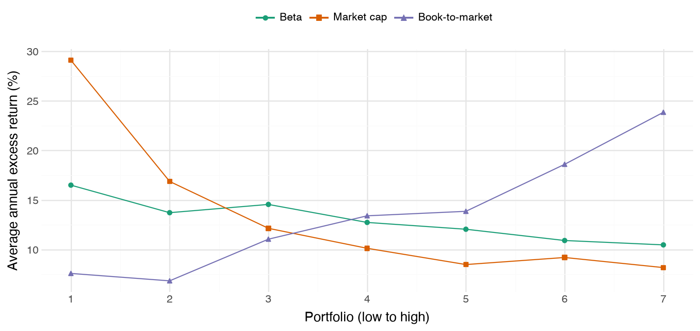
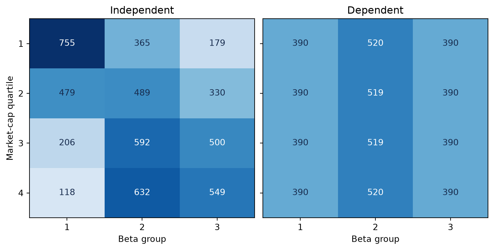
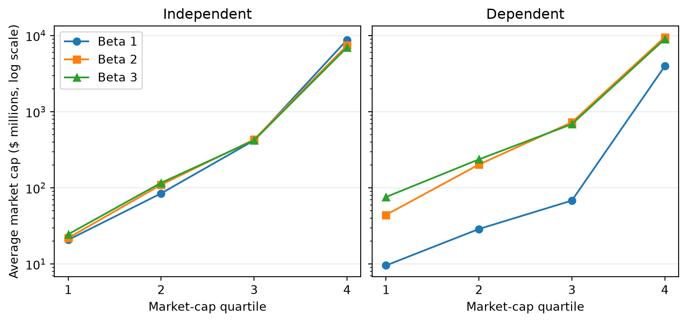

import polars as pl
from eap_pl import build_annual_panel
annual_panel = build_annual_panel()5 Portfolio Analysis
In Chapter 5, Bali et al. (2016) use portfolio sorts to study how next year’s excess return varies with beta, market capitalization, and book-to-market. We form portfolios at each December year-end from 1988 to 2012 using the panel from Chapter 2. Holding returns run from 1989 to 2012.
5.1 Univariate Portfolio Analysis
5.1.1 Breakpoints
In year \(t\), let \(\{X_t\}\) be the available values of the sort variable and \(p_k\) the probability used for breakpoint \(k\). For \(n_P\) portfolios, calculate \(n_P-1\) breakpoints.
\[ B_{k,t}=\operatorname{Pctl}_{p_k}(\{X_t\}). \tag{5.1}\]
The beta sort uses the 10th, 20th, 40th, 60th, 80th, and 90th percentiles. The first and last groups each hold about a tenth of the stocks, giving a closer look at both tails of the distribution. We use linear interpolation for the percentiles.
def breakpoints(stocks, variable, probabilities, by):
return stocks.group_by(by).agg(
pl.col(variable).quantile(p, interpolation="linear").alias(f"{p:.0%}")
for p in probabilities
)
seven_way = [.10, .20, .40, .60, .80, .90]
beta_stocks = annual_panel.filter(pl.col("Beta").is_finite())
beta_breaks = breakpoints(beta_stocks, "Beta", seven_way, ["year"])| Year | 10% | 20% | 40% | 60% | 80% | 90% |
|---|---|---|---|---|---|---|
| 1988 | -0.05 | 0.07 | 0.29 | 0.51 | 0.86 | 1.11 |
| 1989 | -0.11 | 0.05 | 0.29 | 0.54 | 0.89 | 1.17 |
| 1990 | -0.06 | 0.10 | 0.37 | 0.68 | 1.07 | 1.37 |
| 1991 | -0.09 | 0.09 | 0.38 | 0.67 | 1.05 | 1.33 |
| 1992 | -0.22 | 0.08 | 0.42 | 0.77 | 1.23 | 1.66 |
| 1993 | -0.21 | 0.10 | 0.44 | 0.73 | 1.18 | 1.55 |
| 1994 | -0.05 | 0.19 | 0.52 | 0.81 | 1.19 | 1.56 |
| 1995 | -0.17 | 0.10 | 0.42 | 0.71 | 1.16 | 1.65 |
| 1996 | 0.00 | 0.19 | 0.46 | 0.73 | 1.14 | 1.52 |
| 1997 | -0.00 | 0.15 | 0.36 | 0.59 | 0.89 | 1.15 |
| 1998 | 0.13 | 0.28 | 0.54 | 0.79 | 1.13 | 1.38 |
| 1999 | -0.06 | 0.06 | 0.24 | 0.42 | 0.70 | 0.99 |
| 2000 | 0.03 | 0.14 | 0.37 | 0.63 | 1.22 | 1.80 |
| 2001 | 0.05 | 0.18 | 0.46 | 0.76 | 1.23 | 1.75 |
| 2002 | 0.04 | 0.17 | 0.48 | 0.75 | 1.06 | 1.37 |
| 2003 | 0.05 | 0.22 | 0.54 | 0.83 | 1.16 | 1.46 |
| 2004 | 0.14 | 0.40 | 0.81 | 1.16 | 1.56 | 1.96 |
| 2005 | 0.09 | 0.33 | 0.80 | 1.14 | 1.49 | 1.74 |
| 2006 | 0.10 | 0.34 | 0.82 | 1.21 | 1.64 | 1.94 |
| 2007 | 0.13 | 0.32 | 0.75 | 1.04 | 1.33 | 1.55 |
| 2008 | 0.16 | 0.38 | 0.74 | 1.02 | 1.31 | 1.54 |
| 2009 | 0.24 | 0.45 | 0.85 | 1.23 | 1.70 | 2.06 |
| 2010 | 0.29 | 0.56 | 0.93 | 1.19 | 1.49 | 1.72 |
| 2011 | 0.26 | 0.56 | 0.99 | 1.25 | 1.52 | 1.74 |
| 2012 | 0.28 | 0.54 | 0.92 | 1.19 | 1.48 | 1.75 |
5.1.2 Portfolio Formation
With \(B_{0,t}=-\infty\) and \(B_{n_P,t}=\infty\), portfolio \(k\) contains
\[ P_{k,t}=\{i:B_{k-1,t}\le X_{i,t}\le B_{k,t}\}. \tag{5.2}\]
Both endpoints are included, as in BEM. A stock exactly on a breakpoint can enter both adjacent portfolios. The code joins each stock to its year’s breakpoint intervals, then keeps the intervals that contain its sort value.
from itertools import pairwise
def form_portfolios(stocks, variable, breaks, by, label):
cutoffs = [pl.col(column) for column in breaks.columns if column not in by]
edges = [pl.lit(-float("inf")), *cutoffs, pl.lit(float("inf"))]
intervals = pl.concat([
breaks.select(*by, pl.lit(group).alias(label), lower=lower, upper=upper)
for group, (lower, upper) in enumerate(pairwise(edges), 1)
])
return (
stocks.join(intervals, on=by)
.filter(pl.col(variable).is_between("lower", "upper"))
.drop("lower", "upper")
)
beta_members = form_portfolios(beta_stocks, "Beta", beta_breaks, ["year"], "portfolio")| Year | 1 | 2 | 3 | 4 | 5 | 6 | 7 |
|---|---|---|---|---|---|---|---|
| 1988 | 569 | 569 | 1138 | 1138 | 1138 | 569 | 569 |
| 1989 | 552 | 552 | 1104 | 1103 | 1104 | 552 | 552 |
| 1990 | 541 | 541 | 1082 | 1082 | 1082 | 541 | 541 |
| 1991 | 531 | 530 | 1060 | 1061 | 1060 | 530 | 531 |
| 1992 | 539 | 539 | 1078 | 1078 | 1078 | 539 | 539 |
| 1993 | 568 | 568 | 1135 | 1135 | 1135 | 568 | 568 |
| 1994 | 615 | 615 | 1230 | 1229 | 1230 | 615 | 615 |
| 1995 | 629 | 629 | 1258 | 1257 | 1258 | 629 | 629 |
| 1996 | 659 | 659 | 1318 | 1318 | 1318 | 659 | 659 |
| 1997 | 687 | 687 | 1373 | 1374 | 1373 | 687 | 687 |
| 1998 | 661 | 661 | 1322 | 1322 | 1322 | 661 | 661 |
| 1999 | 610 | 610 | 1220 | 1220 | 1220 | 610 | 610 |
| 2000 | 590 | 590 | 1180 | 1180 | 1180 | 590 | 590 |
| 2001 | 551 | 551 | 1102 | 1102 | 1102 | 551 | 551 |
| 2002 | 510 | 510 | 1019 | 1019 | 1019 | 510 | 510 |
| 2003 | 474 | 473 | 947 | 946 | 947 | 473 | 474 |
| 2004 | 458 | 458 | 915 | 915 | 915 | 458 | 458 |
| 2005 | 450 | 449 | 899 | 898 | 899 | 449 | 450 |
| 2006 | 445 | 445 | 890 | 890 | 890 | 445 | 445 |
| 2007 | 433 | 432 | 865 | 865 | 865 | 432 | 433 |
| 2008 | 426 | 426 | 851 | 852 | 851 | 426 | 426 |
| 2009 | 397 | 397 | 794 | 793 | 794 | 397 | 397 |
| 2010 | 380 | 379 | 759 | 758 | 759 | 379 | 380 |
| 2011 | 368 | 367 | 734 | 734 | 734 | 367 | 368 |
| 2012 | 354 | 353 | 707 | 706 | 707 | 353 | 354 |
5.1.3 Average Portfolio Values
For an available outcome \(Y\) and weight \(W\), the portfolio outcome is
\[ Y_{k,t}=\frac{\sum_{i\in P_{k,t}} W_{i,t}Y_{i,t}} {\sum_{i\in P_{k,t}} W_{i,t}}. \tag{5.3}\]
Here \(Y_{i,t}\) is the stock’s excess return in year \(t+1\). For equal weights use \(W_{i,t}=1\). For value weights use December market capitalization and calculate the numerator and denominator on the same set of stocks with available returns and weights. For each year, form the high-minus-low spread
\[ Y_{\mathrm{Diff},t}=Y_{n_P,t}-Y_{1,t}. \tag{5.4}\]
portfolio_columns = [str(group) for group in range(1, 8)]
univariate_columns = [*portfolio_columns, "7–1"]
last_holding_year = 2012
def univariate_series(cells, outcome):
return (
cells.pivot(on="portfolio", index="year", values=outcome)
.sort("year")
.select("year", *portfolio_columns, (pl.col("7") - pl.col("1")).alias("7–1"))
)
r = pl.col("excess")
valid = pl.all_horizontal(r.is_finite(), pl.col("MktCap").is_finite())
w = pl.col("MktCap").filter(valid)
beta_returns = (
beta_members.filter(pl.col("year") < last_holding_year)
.group_by("year", "portfolio")
.agg(EW=r.mean(), VW=(w * r.filter(valid)).sum() / w.sum())
.with_columns(pl.col("VW").fill_nan(None))
)
beta_ew = univariate_series(beta_returns, "EW")
beta_vw = univariate_series(beta_returns, "VW")| Formation year | Holding year | 1 | 2 | 3 | 4 | 5 | 6 | 7 | 7–1 |
|---|---|---|---|---|---|---|---|---|---|
| 1988 | 1989 | -1.05 | 1.13 | 2.05 | 6.70 | 3.43 | 8.87 | 8.95 | 10.00 |
| 1989 | 1990 | -30.37 | -28.94 | -28.87 | -29.86 | -27.77 | -26.50 | -25.94 | 4.43 |
| 1990 | 1991 | 56.99 | 28.57 | 36.32 | 39.25 | 55.69 | 64.86 | 66.65 | 9.66 |
| 1991 | 1992 | 55.59 | 30.65 | 29.35 | 22.09 | 18.94 | 16.13 | 20.22 | -35.36 |
| 1992 | 1993 | 36.17 | 27.13 | 22.85 | 24.18 | 19.94 | 15.34 | 7.92 | -28.26 |
| 1993 | 1994 | -5.20 | -3.80 | -5.47 | -4.27 | -5.72 | -10.09 | -5.06 | 0.14 |
| 1994 | 1995 | 28.09 | 20.97 | 25.46 | 29.52 | 26.97 | 24.25 | 37.25 | 9.16 |
| 1995 | 1996 | 21.34 | 15.99 | 18.45 | 14.22 | 12.26 | 11.94 | 8.84 | -12.50 |
| 1996 | 1997 | 22.80 | 39.18 | 28.37 | 20.35 | 17.81 | 6.29 | -7.58 | -30.39 |
| 1997 | 1998 | -6.72 | -9.22 | -6.94 | -10.34 | -6.72 | -6.32 | 0.13 | 6.85 |
| 1998 | 1999 | 14.67 | 10.15 | 19.65 | 23.27 | 38.04 | 61.67 | 93.44 | 78.76 |
| 1999 | 2000 | -11.35 | -4.32 | -0.95 | -1.26 | -3.46 | -10.71 | -31.02 | -19.66 |
| 2000 | 2001 | 37.83 | 28.48 | 27.28 | 28.40 | 22.50 | -1.66 | -22.15 | -59.99 |
| 2001 | 2002 | 11.95 | 10.66 | -0.31 | -8.06 | -22.62 | -36.20 | -53.76 | -65.72 |
| 2002 | 2003 | 76.76 | 68.87 | 85.51 | 64.98 | 63.56 | 76.64 | 86.90 | 10.14 |
| 2003 | 2004 | 27.96 | 20.65 | 25.78 | 21.39 | 15.67 | 12.90 | -0.04 | -28.00 |
| 2004 | 2005 | 5.90 | 5.60 | 2.99 | 3.41 | 3.03 | -3.04 | -10.32 | -16.23 |
| 2005 | 2006 | 8.99 | 17.01 | 12.91 | 10.76 | 6.97 | 12.82 | 12.24 | 3.25 |
| 2006 | 2007 | -13.42 | -13.15 | -6.94 | -7.67 | -6.41 | -2.82 | -4.22 | 9.20 |
| 2007 | 2008 | -42.62 | -41.99 | -41.42 | -39.13 | -40.49 | -45.44 | -44.15 | -1.53 |
| 2008 | 2009 | 57.04 | 64.84 | 65.21 | 59.10 | 55.01 | 59.68 | 74.32 | 17.28 |
| 2009 | 2010 | 20.39 | 19.39 | 23.09 | 22.76 | 33.37 | 30.02 | 36.90 | 16.51 |
| 2010 | 2011 | -3.79 | -5.68 | -1.13 | -4.32 | -6.94 | -14.46 | -16.25 | -12.46 |
| 2011 | 2012 | 28.09 | 27.18 | 16.12 | 20.33 | 16.24 | 17.85 | 18.15 | -9.94 |
| Formation year | Holding year | 1 | 2 | 3 | 4 | 5 | 6 | 7 | 7–1 |
|---|---|---|---|---|---|---|---|---|---|
| 1988 | 1989 | -3.02 | 11.11 | 9.01 | 16.28 | 20.21 | 29.20 | 18.21 | 21.23 |
| 1989 | 1990 | -28.47 | -34.01 | -18.95 | -19.14 | -16.12 | -11.42 | -11.96 | 16.51 |
| 1990 | 1991 | 0.55 | 16.74 | 12.29 | 17.49 | 22.17 | 31.18 | 51.61 | 51.06 |
| 1991 | 1992 | -1.05 | 22.53 | 14.12 | 8.54 | 5.44 | 0.43 | 12.43 | 13.49 |
| 1992 | 1993 | 21.16 | 18.86 | 14.33 | 9.45 | 7.39 | 5.70 | 3.14 | -18.02 |
| 1993 | 1994 | -15.01 | -7.38 | -2.87 | -4.12 | -2.88 | -9.36 | 1.52 | 16.53 |
| 1994 | 1995 | 17.46 | 21.44 | 25.50 | 32.67 | 31.68 | 28.36 | 29.16 | 11.70 |
| 1995 | 1996 | 5.35 | 18.13 | 18.37 | 14.53 | 13.66 | 18.36 | 29.35 | 24.00 |
| 1996 | 1997 | 3.46 | 34.69 | 26.17 | 20.67 | 27.86 | 27.52 | 22.22 | 18.76 |
| 1997 | 1998 | -7.38 | -6.18 | -0.96 | -0.58 | 12.01 | 16.70 | 31.82 | 39.20 |
| 1998 | 1999 | -17.49 | -17.52 | -9.51 | 1.24 | 0.22 | 30.62 | 57.98 | 75.47 |
| 1999 | 2000 | -23.85 | -1.26 | 11.17 | 13.86 | 5.04 | 0.61 | -26.47 | -2.62 |
| 2000 | 2001 | -10.98 | 3.29 | -14.35 | -9.40 | -5.42 | -2.79 | -52.10 | -41.12 |
| 2001 | 2002 | -3.05 | -14.17 | -14.70 | -13.28 | -19.02 | -31.39 | -46.51 | -43.46 |
| 2002 | 2003 | 61.50 | 41.77 | 22.08 | 23.16 | 23.96 | 28.03 | 55.03 | -6.47 |
| 2003 | 2004 | 10.18 | 26.46 | 18.84 | 16.90 | 9.59 | 8.39 | -4.03 | -14.22 |
| 2004 | 2005 | 6.44 | 0.87 | 2.75 | 2.57 | 3.43 | 3.20 | 1.43 | -5.01 |
| 2005 | 2006 | 4.90 | 15.65 | 13.42 | 9.54 | 7.86 | 10.78 | 11.09 | 6.20 |
| 2006 | 2007 | -13.34 | 13.02 | -1.96 | -1.54 | 7.69 | 7.24 | 1.51 | 14.84 |
| 2007 | 2008 | -36.78 | -22.36 | -24.68 | -35.42 | -39.31 | -53.85 | -60.42 | -23.63 |
| 2008 | 2009 | 11.08 | 29.28 | 12.72 | 35.15 | 26.50 | 40.06 | 36.06 | 24.98 |
| 2009 | 2010 | 8.65 | 9.66 | 12.55 | 17.00 | 24.55 | 25.00 | 19.58 | 10.93 |
| 2010 | 2011 | 3.51 | 14.68 | 7.29 | 4.59 | -8.01 | -20.50 | -20.46 | -23.98 |
| 2011 | 2012 | 26.95 | 8.12 | 15.04 | 18.63 | 19.19 | 15.97 | 35.94 | 8.98 |
The 2012 formation cohort appears in the membership tables. The last holding year in the return tables is 2012.
5.1.4 Summarizing the Results
Average the portfolio outcomes and the spreads across the \(T\) available holding years.
\[ \bar{Y}_k=\frac{1}{T}\sum_{t=1}^T Y_{k,t}. \tag{5.5}\]
\[ \bar{Y}_{\mathrm{Diff}}=\frac{1}{T}\sum_{t=1}^T Y_{\mathrm{Diff},t}. \tag{5.6}\]
An intercept-only regression gives the same time-series mean. We use StatsPAI and six Newey–West lags for inference, as specified by BEM.
beta_means = fit_portfolios(beta_ew, univariate_columns)| Statistic | 1 | 2 | 3 | 4 | 5 | 6 | 7 | 7–1 |
|---|---|---|---|---|---|---|---|---|
| Average | 16.50 | 13.72 | 14.56 | 12.74 | 12.05 | 10.92 | 10.48 | -6.03 |
| Standard error | 3.67 | 2.82 | 2.91 | 2.35 | 2.31 | 2.41 | 3.57 | 4.42 |
| t-statistic | 4.50 | 4.87 | 5.00 | 5.43 | 5.22 | 4.54 | 2.93 | -1.36 |
| p-value | 0.00 | 0.00 | 0.00 | 0.00 | 0.00 | 0.00 | 0.01 | 0.19 |
5.1.5 Interpreting the Results
In Table 5.8, the high-minus-low spread is negative for beta and market capitalization and positive for book-to-market.
5.1.6 Presenting the Results
| 1 | 2 | 3 | 4 | 5 | 6 | 7 | 7–1 |
|---|---|---|---|---|---|---|---|
| 16.50 (4.50) |
13.72 (4.87) |
14.56 (5.00) |
12.74 (5.43) |
12.05 (5.22) |
10.92 (4.54) |
10.48 (2.93) |
-6.03 (-1.36) |
We can use formation-year characteristics as outcomes as well. BEM reports the portfolio means and tests the spread. For market capitalization the units are millions of dollars.
| Outcome | 1 | 2 | 3 | 4 | 5 | 6 | 7 | 7–1 | 7–1 t-statistic |
|---|---|---|---|---|---|---|---|---|---|
| Beta | -0.22 | 0.14 | 0.41 | 0.71 | 1.03 | 1.37 | 1.94 | 2.16 | 24.81 |
| Market cap | 153.59 | 1074.50 | 2305.49 | 2573.54 | 2529.48 | 2522.60 | 2519.82 | 2366.23 | 3.96 |
| Book-to-market | 0.99 | 1.01 | 0.83 | 0.76 | 0.67 | 0.54 | 0.53 | -0.46 | -4.06 |
The same percentile cutoffs can be applied to other sort variables. Recompute the breakpoints with the available observations for each variable. Use the signed book-to-market ratio from Section 2.2.
def univariate_sort(variable):
stocks = annual_panel.filter(pl.col(variable).is_finite())
breaks = breakpoints(stocks, variable, seven_way, ["year"])
return form_portfolios(stocks, variable, breaks, ["year"], "portfolio")
univariate_means = {"Beta": beta_means}
for variable in ["MktCap", "BM"]:
members = univariate_sort(variable)
returns = (
members.filter(pl.col("year") < last_holding_year)
.group_by("year", "portfolio").agg(pl.col("excess").mean())
)
series = univariate_series(returns, "excess")
univariate_means[variable] = fit_portfolios(series, univariate_columns)| Sort variable | 1 | 2 | 3 | 4 | 5 | 6 | 7 | 7–1 |
|---|---|---|---|---|---|---|---|---|
| Beta | 16.50 (4.50) |
13.72 (4.87) |
14.56 (5.00) |
12.74 (5.43) |
12.05 (5.22) |
10.92 (4.54) |
10.48 (2.93) |
-6.03 (-1.36) |
| Market cap | 29.10 (6.45) |
16.88 (4.62) |
12.15 (3.78) |
10.13 (4.23) |
8.49 (4.69) |
9.20 (4.97) |
8.18 (3.91) |
-20.92 (-5.01) |
| Book-to-market | 7.60 (2.58) |
6.85 (3.19) |
11.05 (4.99) |
13.41 (5.92) |
13.86 (5.57) |
18.60 (6.33) |
23.85 (7.01) |
16.26 (5.86) |
The companion plot in Figure 5.1 compares the return profiles. The size sort has its highest average return in the smallest-stock portfolio. Book-to-market has its highest return in the highest-ratio portfolio.

5.1.7 Analyzing Returns
Regress each annual portfolio return on factors from the same holding year. We use the published annual series from the Kenneth French Data Library, taking the three factors from the July 2016 archive and momentum from the December 2024 legacy archive. The factors and portfolio outcomes are in percent.
The market model, Fama–French three-factor model, and Carhart four-factor model are
\[ r_{p,t}=\alpha+\beta_{\mathrm{MKT}}\mathrm{MKT}_t+\epsilon_t, \tag{5.7}\]
\[ r_{p,t}=\alpha+\beta_{\mathrm{MKT}}\mathrm{MKT}_t+ \beta_{\mathrm{SMB}}\mathrm{SMB}_t+\beta_{\mathrm{HML}}\mathrm{HML}_t+\epsilon_t, \tag{5.8}\]
\[ r_{p,t}=\alpha+\beta_{\mathrm{MKT}}\mathrm{MKT}_t+ \beta_{\mathrm{SMB}}\mathrm{SMB}_t+\beta_{\mathrm{HML}}\mathrm{HML}_t+ \beta_{\mathrm{MOM}}\mathrm{MOM}_t+\epsilon_t. \tag{5.9}\]
The intercept is the portfolio’s alpha under the chosen model. For a zero-cost spread, the outcome is the difference between the two legs’ excess returns.
| Model | Coefficient | 1 | 2 | 3 | 4 | 5 | 6 | 7 | 7–1 |
|---|---|---|---|---|---|---|---|---|---|
| Excess return | Mean | 16.50 (4.50) |
13.72 (4.87) |
14.56 (5.00) |
12.74 (5.43) |
12.05 (5.22) |
10.92 (4.54) |
10.48 (2.93) |
-6.03 (-1.36) |
| CAPM | Alpha | 8.96 (1.80) |
6.73 (1.45) |
6.80 (1.49) |
5.35 (1.39) |
3.68 (1.19) |
0.48 (0.21) |
-2.42 (-1.06) |
-11.37 (-1.84) |
| CAPM | mkt |
0.99 (3.36) |
0.91 (3.18) |
1.01 (3.90) |
0.96 (3.94) |
1.09 (5.34) |
1.36 (7.45) |
1.68 (8.13) |
0.70 (1.93) |
| FF | Alpha | 4.63 (2.14) |
2.54 (1.67) |
3.23 (2.79) |
2.35 (2.56) |
1.78 (1.71) |
-0.00 (-0.00) |
-0.67 (-0.28) |
-5.30 (-1.51) |
| FF | mkt |
1.04 (7.53) |
0.99 (6.24) |
1.05 (9.38) |
0.99 (9.21) |
1.06 (14.30) |
1.25 (15.52) |
1.46 (12.04) |
0.42 (1.86) |
| FF | smb |
1.41 (9.66) |
1.09 (10.33) |
1.26 (7.68) |
1.14 (13.85) |
1.25 (24.30) |
1.36 (20.07) |
1.48 (13.64) |
0.08 (0.33) |
| FF | hml |
0.58 (5.49) |
0.62 (10.05) |
0.46 (5.27) |
0.37 (5.99) |
0.12 (1.40) |
-0.19 (-1.98) |
-0.67 (-4.24) |
-1.24 (-6.86) |
| FFC | Alpha | 6.19 (2.60) |
5.99 (3.02) |
6.44 (3.32) |
4.57 (3.48) |
2.76 (2.42) |
0.75 (0.59) |
0.65 (0.29) |
-5.53 (-1.57) |
| FFC | mkt |
0.99 (7.15) |
0.89 (6.88) |
0.95 (10.97) |
0.92 (9.79) |
1.03 (16.44) |
1.23 (19.75) |
1.42 (12.24) |
0.43 (1.78) |
| FFC | smb |
1.33 (6.75) |
0.90 (6.53) |
1.09 (6.31) |
1.02 (8.71) |
1.19 (18.24) |
1.32 (12.99) |
1.41 (9.77) |
0.09 (0.30) |
| FFC | hml |
0.55 (4.23) |
0.57 (6.93) |
0.41 (11.33) |
0.33 (10.89) |
0.11 (1.45) |
-0.20 (-2.12) |
-0.69 (-4.11) |
-1.24 (-7.09) |
| FFC | mom |
-0.13 (-1.82) |
-0.30 (-4.71) |
-0.28 (-8.62) |
-0.19 (-3.19) |
-0.08 (-1.69) |
-0.06 (-1.07) |
-0.11 (-1.10) |
0.02 (0.15) |
5.2 Bivariate Independent-Sort Analysis
5.2.1 Breakpoints
To study returns across market-cap groups while controlling for beta, keep stocks with both characteristics. For an independent sort, calculate both sets of breakpoints across this same cross-section. Let \(j\) index the \(n_1\) groups of \(X_1\) and \(k\) index the \(n_2\) groups of \(X_2\).
\[ B_{1j,t}=\operatorname{Pctl}_{p_{1j}}(\{X_{1t}\}). \tag{5.10}\]
\[ B_{2k,t}=\operatorname{Pctl}_{p_{2k}}(\{X_{2t}\}). \tag{5.11}\]
We use the 30th and 70th percentiles for beta and the 25th, 50th, and 75th percentiles for market capitalization.
Use the same percentile and membership functions as in the univariate sort. The second set of breakpoints is grouped only by year here. The dependent sort uses the same pipeline with an additional grouping key for the first portfolio.
control_ports = ["1", "2", "3"]
def bivariate_sort(first, second, *, dependent=False):
stocks = annual_panel.filter(pl.all_horizontal(pl.col(first, second).is_finite()))
first_breaks = breakpoints(stocks, first, [.30, .70], ["year"])
first_groups = form_portfolios(stocks, first, first_breaks, ["year"], "control")
by = ["year", "control"] if dependent else ["year"]
breakpoint_sample = first_groups if dependent else stocks
second_breaks = breakpoints(breakpoint_sample, second, [.25, .50, .75], by)
members = form_portfolios(first_groups, second, second_breaks, by, "target")
return members, first_breaks, second_breaks
independent, first_breaks, second_breaks = bivariate_sort("Beta", "MktCap")| Year | Beta 30% | Beta 70% | Market cap 25% | Market cap 50% | Market cap 75% |
|---|---|---|---|---|---|
| 1988 | 0.18 | 0.66 | 9.65 | 34.83 | 159.51 |
| 1989 | 0.17 | 0.70 | 9.77 | 37.08 | 184.04 |
| 1990 | 0.23 | 0.86 | 6.53 | 25.94 | 149.23 |
| 1991 | 0.24 | 0.85 | 9.71 | 41.56 | 223.52 |
| 1992 | 0.26 | 0.97 | 16.17 | 62.88 | 284.57 |
| 1993 | 0.29 | 0.92 | 22.47 | 78.32 | 345.36 |
| 1994 | 0.36 | 0.97 | 20.73 | 72.30 | 304.26 |
| 1995 | 0.27 | 0.90 | 26.04 | 91.39 | 382.99 |
| 1996 | 0.32 | 0.90 | 28.54 | 102.21 | 439.26 |
| 1997 | 0.26 | 0.72 | 32.65 | 119.62 | 521.35 |
| 1998 | 0.41 | 0.94 | 28.78 | 106.66 | 509.68 |
| 1999 | 0.15 | 0.53 | 33.75 | 128.07 | 622.49 |
| 2000 | 0.26 | 0.85 | 24.26 | 102.16 | 610.02 |
| 2001 | 0.31 | 0.95 | 34.13 | 142.70 | 717.10 |
| 2002 | 0.33 | 0.89 | 33.09 | 130.27 | 634.38 |
| 2003 | 0.38 | 0.97 | 70.18 | 271.02 | 1054.80 |
| 2004 | 0.63 | 1.35 | 91.07 | 335.53 | 1310.39 |
| 2005 | 0.60 | 1.30 | 96.85 | 349.11 | 1410.58 |
| 2006 | 0.61 | 1.40 | 108.65 | 406.97 | 1593.21 |
| 2007 | 0.56 | 1.18 | 93.16 | 354.23 | 1519.79 |
| 2008 | 0.57 | 1.14 | 38.00 | 196.86 | 880.52 |
| 2009 | 0.65 | 1.45 | 68.59 | 307.92 | 1350.83 |
| 2010 | 0.76 | 1.33 | 95.23 | 419.72 | 1844.49 |
| 2011 | 0.82 | 1.39 | 80.66 | 392.63 | 1774.84 |
| 2012 | 0.75 | 1.32 | 106.19 | 485.38 | 2041.60 |
5.2.2 Portfolio Formation
A portfolio is the intersection of a beta group and a market-cap group.
\[ P_{j,k,t}= \{i:B_{1,j-1,t}\le X_{1i,t}\le B_{1j,t}\} \cap \{i:B_{2,k-1,t}\le X_{2i,t}\le B_{2k,t}\}. \tag{5.12}\]
Pivot the portfolio cells so that the beta groups are columns and the market-cap groups are rows within each year.
def control_grid(cells, value):
return (
cells.pivot(on="control", index=["year", "target"], values=value)
.sort("year", "target")
.select("year", "target", *control_ports)
)| Year | Portfolio | Beta 1 | Beta 2 | Beta 3 |
|---|---|---|---|---|
| 1988 | Market cap 1 | 736 | 467 | 219 |
| 1988 | Market cap 2 | 539 | 584 | 298 |
| 1988 | Market cap 3 | 336 | 683 | 402 |
| 1988 | Market cap 4 | 95 | 540 | 787 |
| 1989 | Market cap 1 | 738 | 419 | 223 |
| 1989 | Market cap 2 | 535 | 575 | 269 |
| 1989 | Market cap 3 | 298 | 664 | 417 |
| 1989 | Market cap 4 | 85 | 548 | 747 |
| 1990 | Market cap 1 | 725 | 440 | 187 |
| 1990 | Market cap 2 | 507 | 575 | 269 |
| 1990 | Market cap 3 | 288 | 603 | 460 |
| 1990 | Market cap 4 | 102 | 544 | 706 |
| 1991 | Market cap 1 | 762 | 395 | 169 |
| 1991 | Market cap 2 | 509 | 569 | 247 |
| 1991 | Market cap 3 | 255 | 606 | 464 |
| 1991 | Market cap 4 | 65 | 550 | 711 |
| 1992 | Market cap 1 | 680 | 429 | 238 |
| 1992 | Market cap 2 | 508 | 531 | 308 |
| 1992 | Market cap 3 | 307 | 561 | 479 |
| 1992 | Market cap 4 | 122 | 633 | 592 |
| 1993 | Market cap 1 | 741 | 406 | 271 |
| 1993 | Market cap 2 | 530 | 580 | 308 |
| 1993 | Market cap 3 | 330 | 614 | 475 |
| 1993 | Market cap 4 | 102 | 669 | 648 |
| 1994 | Market cap 1 | 769 | 433 | 335 |
| 1994 | Market cap 2 | 593 | 596 | 348 |
| 1994 | Market cap 3 | 353 | 685 | 499 |
| 1994 | Market cap 4 | 130 | 744 | 663 |
| 1995 | Market cap 1 | 785 | 432 | 355 |
| 1995 | Market cap 2 | 585 | 593 | 394 |
| 1995 | Market cap 3 | 373 | 698 | 501 |
| 1995 | Market cap 4 | 144 | 791 | 637 |
| 1996 | Market cap 1 | 791 | 519 | 336 |
| 1996 | Market cap 2 | 623 | 579 | 444 |
| 1996 | Market cap 3 | 423 | 676 | 547 |
| 1996 | Market cap 4 | 138 | 859 | 649 |
| 1997 | Market cap 1 | 868 | 571 | 278 |
| 1997 | Market cap 2 | 689 | 653 | 375 |
| 1997 | Market cap 3 | 413 | 783 | 521 |
| 1997 | Market cap 4 | 91 | 739 | 887 |
| 1998 | Market cap 1 | 843 | 557 | 252 |
| 1998 | Market cap 2 | 624 | 667 | 361 |
| 1998 | Market cap 3 | 368 | 710 | 574 |
| 1998 | Market cap 4 | 149 | 708 | 795 |
| 1999 | Market cap 1 | 785 | 485 | 253 |
| 1999 | Market cap 2 | 634 | 610 | 278 |
| 1999 | Market cap 3 | 338 | 731 | 453 |
| 1999 | Market cap 4 | 70 | 610 | 843 |
| 2000 | Market cap 1 | 608 | 523 | 343 |
| 2000 | Market cap 2 | 666 | 456 | 351 |
| 2000 | Market cap 3 | 290 | 639 | 544 |
| 2000 | Market cap 4 | 204 | 740 | 530 |
| 2001 | Market cap 1 | 685 | 468 | 223 |
| 2001 | Market cap 2 | 613 | 458 | 305 |
| 2001 | Market cap 3 | 191 | 644 | 541 |
| 2001 | Market cap 4 | 163 | 631 | 582 |
| 2002 | Market cap 1 | 760 | 385 | 128 |
| 2002 | Market cap 2 | 649 | 399 | 224 |
| 2002 | Market cap 3 | 93 | 641 | 538 |
| 2002 | Market cap 4 | 25 | 611 | 637 |
| 2003 | Market cap 1 | 836 | 276 | 72 |
| 2003 | Market cap 2 | 487 | 454 | 242 |
| 2003 | Market cap 3 | 51 | 586 | 546 |
| 2003 | Market cap 4 | 46 | 578 | 560 |
| 2004 | Market cap 1 | 770 | 265 | 107 |
| 2004 | Market cap 2 | 405 | 390 | 347 |
| 2004 | Market cap 3 | 56 | 484 | 602 |
| 2004 | Market cap 4 | 140 | 687 | 315 |
| 2005 | Market cap 1 | 834 | 230 | 60 |
| 2005 | Market cap 2 | 401 | 433 | 290 |
| 2005 | Market cap 3 | 33 | 430 | 661 |
| 2005 | Market cap 4 | 81 | 705 | 338 |
| 2006 | Market cap 1 | 817 | 250 | 46 |
| 2006 | Market cap 2 | 357 | 427 | 329 |
| 2006 | Market cap 3 | 18 | 467 | 628 |
| 2006 | Market cap 4 | 143 | 636 | 334 |
| 2007 | Market cap 1 | 808 | 235 | 39 |
| 2007 | Market cap 2 | 389 | 350 | 343 |
| 2007 | Market cap 3 | 28 | 453 | 601 |
| 2007 | Market cap 4 | 74 | 693 | 315 |
| 2008 | Market cap 1 | 742 | 245 | 77 |
| 2008 | Market cap 2 | 429 | 289 | 346 |
| 2008 | Market cap 3 | 42 | 548 | 474 |
| 2008 | Market cap 4 | 64 | 619 | 381 |
| 2009 | Market cap 1 | 688 | 219 | 85 |
| 2009 | Market cap 2 | 265 | 321 | 406 |
| 2009 | Market cap 3 | 75 | 508 | 409 |
| 2009 | Market cap 4 | 163 | 538 | 291 |
| 2010 | Market cap 1 | 715 | 182 | 52 |
| 2010 | Market cap 2 | 156 | 396 | 396 |
| 2010 | Market cap 3 | 69 | 469 | 410 |
| 2010 | Market cap 4 | 198 | 471 | 280 |
| 2011 | Market cap 1 | 718 | 152 | 48 |
| 2011 | Market cap 2 | 155 | 334 | 429 |
| 2011 | Market cap 3 | 48 | 460 | 410 |
| 2011 | Market cap 4 | 180 | 523 | 215 |
| 2012 | Market cap 1 | 661 | 148 | 74 |
| 2012 | Market cap 2 | 133 | 395 | 355 |
| 2012 | Market cap 3 | 84 | 445 | 354 |
| 2012 | Market cap 4 | 182 | 424 | 277 |
5.2.3 Average Portfolio Values
Within each of the 12 portfolios, compute the outcome using the univariate weighting rule. The example uses equal weights.
\[ Y_{j,k,t}=\frac{\sum_{i\in P_{j,k,t}}W_{i,t}Y_{i,t}} {\sum_{i\in P_{j,k,t}}W_{i,t}}. \tag{5.13}\]
A high-minus-low spread along market capitalization holds the beta group fixed. A spread along beta holds the market-cap group fixed.
\[ Y_{j,\mathrm{Diff},t}=Y_{j,n_2,t}-Y_{j,1,t}. \tag{5.14}\]
\[ Y_{\mathrm{Diff},k,t}=Y_{n_1,k,t}-Y_{1,k,t}. \tag{5.15}\]
We can also average across either set of portfolios. Each group receives equal weight, even when stock counts differ.
\[ Y_{\mathrm{Avg},k,t}=\frac{1}{n_1}\sum_{j=1}^{n_1}Y_{j,k,t}. \tag{5.16}\]
\[ Y_{j,\mathrm{Avg},t}=\frac{1}{n_2}\sum_{k=1}^{n_2}Y_{j,k,t}. \tag{5.17}\]
\[ Y_{\mathrm{Avg},\mathrm{Avg},t} =\frac{1}{n_1}\sum_jY_{j,\mathrm{Avg},t} =\frac{1}{n_2}\sum_kY_{\mathrm{Avg},k,t} =\frac{1}{n_1n_2}\sum_j\sum_kY_{j,k,t}. \tag{5.18}\]
The difference in differences compares the market-cap spread in the highest-beta group with the spread in the lowest-beta group. The same result comes from comparing beta spreads across market-cap groups.
\[ \begin{aligned} Y_{\mathrm{Diff},\mathrm{Diff},t} &=Y_{n_1,n_2,t}-Y_{n_1,1,t}-Y_{1,n_2,t}+Y_{1,1,t}\\ &=Y_{\mathrm{Diff},n_2,t}-Y_{\mathrm{Diff},1,t}\\ &=Y_{n_1,\mathrm{Diff},t}-Y_{1,\mathrm{Diff},t}. \end{aligned} \tag{5.19}\]
| Second sort | First sort low | First sort high | First sort high minus low |
|---|---|---|---|
| Low | \(A\) | \(B\) | \(B-A\) |
| High | \(C\) | \(D\) | \(D-C\) |
| High minus low | \(C-A\) | \(D-B\) | \((D-C)-(B-A)=(D-B)-(C-A)\) |
Compute the spreads and averages within each holding year before fitting their time-series means or alphas. This preserves the covariance between the portfolio legs in the reported standard errors.
def bivariate_returns(members, *, dependent=False):
cells = (
members.filter(pl.col("year") < last_holding_year)
.group_by("year", "control", "target").agg(pl.col("excess").mean())
)
grid = control_grid(cells, "excess")
control_returns = pl.col(control_ports)
spread = grid.group_by("year").agg(
control_returns.filter(pl.col("target") == 4).first()
- control_returns.filter(pl.col("target") == 1).first()
).with_columns(target=pl.lit(5))
rows = [grid, spread.select(grid.columns)]
if not dependent:
average = grid.group_by("year").agg(pl.col(control_ports).mean()).with_columns(target=pl.lit(6))
rows.append(average.select(grid.columns))
return (
pl.concat(rows).sort("year", "target")
.with_columns(Diff=pl.col("3") - pl.col("1"),
Avg=pl.mean_horizontal(control_ports, ignore_nulls=False))
)
independent_returns = bivariate_returns(independent)| Formation year | Holding year | Portfolio | Beta 1 | Beta 2 | Beta 3 | Beta 3–1 | Beta average |
|---|---|---|---|---|---|---|---|
| 1988 | 1989 | Market cap 1 | 1.13 | -0.96 | 1.58 | 0.45 | 0.58 |
| 1988 | 1989 | Market cap 2 | -2.02 | -1.54 | -9.91 | -7.89 | -4.49 |
| 1988 | 1989 | Market cap 3 | 4.69 | 3.50 | 5.47 | 0.78 | 4.56 |
| 1988 | 1989 | Market cap 4 | 9.92 | 14.52 | 17.01 | 7.08 | 13.82 |
| 1988 | 1989 | Market cap 4–1 | 8.80 | 15.48 | 15.43 | 6.63 | 13.24 |
| 1988 | 1989 | Market cap average | 3.43 | 3.88 | 3.54 | 0.11 | 3.62 |
| 1989 | 1990 | Market cap 1 | -27.17 | -31.86 | -14.84 | 12.34 | -24.62 |
| 1989 | 1990 | Market cap 2 | -32.11 | -37.32 | -39.78 | -7.67 | -36.40 |
| 1989 | 1990 | Market cap 3 | -27.71 | -31.91 | -32.91 | -5.21 | -30.84 |
| 1989 | 1990 | Market cap 4 | -24.51 | -20.10 | -19.66 | 4.85 | -21.42 |
| 1989 | 1990 | Market cap 4–1 | 2.67 | 11.76 | -4.82 | -7.49 | 3.20 |
| 1989 | 1990 | Market cap average | -27.87 | -30.30 | -26.80 | 1.08 | -28.32 |
| 1990 | 1991 | Market cap 1 | 54.33 | 64.83 | 106.14 | 51.81 | 75.10 |
| 1990 | 1991 | Market cap 2 | 38.00 | 44.02 | 74.11 | 36.10 | 52.04 |
| 1990 | 1991 | Market cap 3 | 23.17 | 41.41 | 54.21 | 31.04 | 39.60 |
| 1990 | 1991 | Market cap 4 | 15.71 | 28.61 | 47.73 | 32.03 | 30.69 |
| 1990 | 1991 | Market cap 4–1 | -38.62 | -36.22 | -58.40 | -19.78 | -44.41 |
| 1990 | 1991 | Market cap average | 32.80 | 44.72 | 70.55 | 37.74 | 49.36 |
| 1991 | 1992 | Market cap 1 | 56.56 | 41.67 | 64.00 | 7.45 | 54.08 |
| 1991 | 1992 | Market cap 2 | 24.63 | 25.01 | 18.36 | -6.27 | 22.67 |
| 1991 | 1992 | Market cap 3 | 24.04 | 19.04 | 10.91 | -13.13 | 18.00 |
| 1991 | 1992 | Market cap 4 | 16.09 | 14.20 | 9.57 | -6.52 | 13.29 |
| 1991 | 1992 | Market cap 4–1 | -40.47 | -27.48 | -54.44 | -13.97 | -40.79 |
| 1991 | 1992 | Market cap average | 30.33 | 24.98 | 25.71 | -4.62 | 27.01 |
| 1992 | 1993 | Market cap 1 | 42.35 | 46.58 | 37.23 | -5.12 | 42.05 |
| 1992 | 1993 | Market cap 2 | 21.00 | 25.25 | 13.71 | -7.30 | 19.99 |
| 1992 | 1993 | Market cap 3 | 18.08 | 15.01 | 5.92 | -12.16 | 13.01 |
| 1992 | 1993 | Market cap 4 | 15.67 | 11.87 | 11.90 | -3.77 | 13.15 |
| 1992 | 1993 | Market cap 4–1 | -26.67 | -34.72 | -25.33 | 1.34 | -28.91 |
| 1992 | 1993 | Market cap average | 24.28 | 24.68 | 17.19 | -7.09 | 22.05 |
| 1993 | 1994 | Market cap 1 | -1.89 | 0.27 | -7.57 | -5.68 | -3.06 |
| 1993 | 1994 | Market cap 2 | -8.72 | -5.08 | -8.17 | 0.55 | -7.32 |
| 1993 | 1994 | Market cap 3 | -5.82 | -4.16 | -10.47 | -4.65 | -6.81 |
| 1993 | 1994 | Market cap 4 | -4.93 | -6.22 | -5.91 | -0.98 | -5.69 |
| 1993 | 1994 | Market cap 4–1 | -3.04 | -6.49 | 1.66 | 4.70 | -2.63 |
| 1993 | 1994 | Market cap average | -5.34 | -3.80 | -8.03 | -2.69 | -5.72 |
| 1994 | 1995 | Market cap 1 | 28.00 | 30.72 | 26.23 | -1.77 | 28.32 |
| 1994 | 1995 | Market cap 2 | 25.30 | 34.37 | 35.24 | 9.94 | 31.64 |
| 1994 | 1995 | Market cap 3 | 22.51 | 26.52 | 29.64 | 7.13 | 26.22 |
| 1994 | 1995 | Market cap 4 | 19.72 | 23.64 | 24.52 | 4.80 | 22.63 |
| 1994 | 1995 | Market cap 4–1 | -8.28 | -7.08 | -1.71 | 6.58 | -5.69 |
| 1994 | 1995 | Market cap average | 23.88 | 28.81 | 28.91 | 5.02 | 27.20 |
| 1995 | 1996 | Market cap 1 | 24.62 | 15.06 | 16.40 | -8.22 | 18.70 |
| 1995 | 1996 | Market cap 2 | 13.78 | 12.08 | 8.26 | -5.52 | 11.37 |
| 1995 | 1996 | Market cap 3 | 19.90 | 16.32 | 7.47 | -12.42 | 14.56 |
| 1995 | 1996 | Market cap 4 | 16.03 | 15.41 | 9.40 | -6.63 | 13.61 |
| 1995 | 1996 | Market cap 4–1 | -8.59 | 0.35 | -7.00 | 1.59 | -5.08 |
| 1995 | 1996 | Market cap average | 18.58 | 14.72 | 10.38 | -8.20 | 14.56 |
| 1996 | 1997 | Market cap 1 | 27.41 | 15.32 | 0.41 | -27.00 | 14.38 |
| 1996 | 1997 | Market cap 2 | 34.10 | 21.39 | 0.47 | -33.63 | 18.65 |
| 1996 | 1997 | Market cap 3 | 33.24 | 24.14 | -0.15 | -33.40 | 19.08 |
| 1996 | 1997 | Market cap 4 | 25.28 | 24.20 | 14.41 | -10.87 | 21.30 |
| 1996 | 1997 | Market cap 4–1 | -2.13 | 8.88 | 14.00 | 16.13 | 6.92 |
| 1996 | 1997 | Market cap average | 30.01 | 21.26 | 3.78 | -26.22 | 18.35 |
| 1997 | 1998 | Market cap 1 | -6.33 | -7.03 | -9.01 | -2.68 | -7.46 |
| 1997 | 1998 | Market cap 2 | -12.51 | -13.35 | -18.89 | -6.38 | -14.91 |
| 1997 | 1998 | Market cap 3 | -5.29 | -9.10 | -9.97 | -4.68 | -8.12 |
| 1997 | 1998 | Market cap 4 | -2.89 | -2.47 | 5.47 | 8.36 | 0.04 |
| 1997 | 1998 | Market cap 4–1 | 3.45 | 4.56 | 14.49 | 11.04 | 7.50 |
| 1997 | 1998 | Market cap average | -6.75 | -7.99 | -8.10 | -1.34 | -7.61 |
| 1998 | 1999 | Market cap 1 | 33.03 | 67.19 | 112.14 | 79.12 | 70.79 |
| 1998 | 1999 | Market cap 2 | 9.64 | 38.20 | 79.21 | 69.57 | 42.35 |
| 1998 | 1999 | Market cap 3 | -8.62 | 17.81 | 56.12 | 64.74 | 21.77 |
| 1998 | 1999 | Market cap 4 | -14.57 | -4.55 | 46.42 | 60.99 | 9.10 |
| 1998 | 1999 | Market cap 4–1 | -47.60 | -71.74 | -65.72 | -18.13 | -61.68 |
| 1998 | 1999 | Market cap average | 4.87 | 29.66 | 73.47 | 68.60 | 36.00 |
| 1999 | 2000 | Market cap 1 | -7.07 | -13.48 | -33.81 | -26.74 | -18.12 |
| 1999 | 2000 | Market cap 2 | -9.31 | -10.02 | -26.45 | -17.14 | -15.26 |
| 1999 | 2000 | Market cap 3 | -0.45 | 4.42 | -13.55 | -13.09 | -3.19 |
| 1999 | 2000 | Market cap 4 | 6.88 | 13.01 | -8.53 | -15.41 | 3.79 |
| 1999 | 2000 | Market cap 4–1 | 13.95 | 26.49 | 25.27 | 11.32 | 21.90 |
| 1999 | 2000 | Market cap average | -2.49 | -1.52 | -20.58 | -18.10 | -8.20 |
| 2000 | 2001 | Market cap 1 | 44.88 | 52.42 | 20.23 | -24.65 | 39.18 |
| 2000 | 2001 | Market cap 2 | 31.35 | 41.11 | 0.97 | -30.38 | 24.48 |
| 2000 | 2001 | Market cap 3 | 31.51 | 22.66 | 0.66 | -30.85 | 18.28 |
| 2000 | 2001 | Market cap 4 | -2.48 | 4.54 | -20.44 | -17.96 | -6.13 |
| 2000 | 2001 | Market cap 4–1 | -47.36 | -47.89 | -40.67 | 6.69 | -45.30 |
| 2000 | 2001 | Market cap average | 26.32 | 30.18 | 0.35 | -25.96 | 18.95 |
| 2001 | 2002 | Market cap 1 | 7.12 | -6.02 | -31.40 | -38.53 | -10.10 |
| 2001 | 2002 | Market cap 2 | 14.51 | -8.99 | -41.64 | -56.15 | -12.04 |
| 2001 | 2002 | Market cap 3 | 3.05 | -10.23 | -42.33 | -45.38 | -16.50 |
| 2001 | 2002 | Market cap 4 | -7.97 | -8.65 | -38.66 | -30.69 | -18.43 |
| 2001 | 2002 | Market cap 4–1 | -15.10 | -2.63 | -7.26 | 7.84 | -8.33 |
| 2001 | 2002 | Market cap average | 4.18 | -8.47 | -38.51 | -42.69 | -14.27 |
| 2002 | 2003 | Market cap 1 | 105.60 | 131.00 | 184.10 | 78.50 | 140.23 |
| 2002 | 2003 | Market cap 2 | 56.26 | 99.75 | 109.02 | 52.76 | 88.35 |
| 2002 | 2003 | Market cap 3 | 37.15 | 45.27 | 71.56 | 34.41 | 51.33 |
| 2002 | 2003 | Market cap 4 | 23.00 | 30.98 | 49.40 | 26.39 | 34.46 |
| 2002 | 2003 | Market cap 4–1 | -82.60 | -100.02 | -134.71 | -52.11 | -105.78 |
| 2002 | 2003 | Market cap average | 55.50 | 76.75 | 103.52 | 48.02 | 78.59 |
| 2003 | 2004 | Market cap 1 | 28.58 | 24.03 | 21.81 | -6.77 | 24.81 |
| 2003 | 2004 | Market cap 2 | 20.46 | 17.24 | 7.89 | -12.57 | 15.20 |
| 2003 | 2004 | Market cap 3 | 23.70 | 22.22 | 6.82 | -16.88 | 17.58 |
| 2003 | 2004 | Market cap 4 | 27.28 | 19.83 | 10.89 | -16.39 | 19.34 |
| 2003 | 2004 | Market cap 4–1 | -1.29 | -4.20 | -10.92 | -9.62 | -5.47 |
| 2003 | 2004 | Market cap average | 25.00 | 20.83 | 11.85 | -13.15 | 19.23 |
| 2004 | 2005 | Market cap 1 | 2.52 | 3.42 | -28.97 | -31.49 | -7.68 |
| 2004 | 2005 | Market cap 2 | 4.64 | -2.03 | -7.32 | -11.96 | -1.57 |
| 2004 | 2005 | Market cap 3 | 14.31 | 4.25 | -0.56 | -14.88 | 6.00 |
| 2004 | 2005 | Market cap 4 | 3.05 | 7.58 | 4.59 | 1.54 | 5.07 |
| 2004 | 2005 | Market cap 4–1 | 0.53 | 4.16 | 33.56 | 33.03 | 12.75 |
| 2004 | 2005 | Market cap average | 6.13 | 3.30 | -8.07 | -14.20 | 0.46 |
| 2005 | 2006 | Market cap 1 | 12.74 | 13.91 | -5.60 | -18.34 | 7.02 |
| 2005 | 2006 | Market cap 2 | 14.24 | 13.78 | 10.88 | -3.36 | 12.97 |
| 2005 | 2006 | Market cap 3 | 11.97 | 9.39 | 11.64 | -0.33 | 11.00 |
| 2005 | 2006 | Market cap 4 | 9.24 | 9.23 | 8.07 | -1.17 | 8.85 |
| 2005 | 2006 | Market cap 4–1 | -3.50 | -4.67 | 13.67 | 17.17 | 1.83 |
| 2005 | 2006 | Market cap average | 12.05 | 11.58 | 6.25 | -5.80 | 9.96 |
| 2006 | 2007 | Market cap 1 | -12.80 | -10.63 | -28.89 | -16.09 | -17.44 |
| 2006 | 2007 | Market cap 2 | -11.47 | -11.96 | -11.38 | 0.09 | -11.60 |
| 2006 | 2007 | Market cap 3 | -11.35 | -9.78 | -5.93 | 5.42 | -9.02 |
| 2006 | 2007 | Market cap 4 | 0.09 | -1.10 | 8.37 | 8.29 | 2.46 |
| 2006 | 2007 | Market cap 4–1 | 12.89 | 9.54 | 37.26 | 24.37 | 19.89 |
| 2006 | 2007 | Market cap average | -8.88 | -8.37 | -9.46 | -0.57 | -8.90 |
| 2007 | 2008 | Market cap 1 | -46.52 | -49.11 | -56.53 | -10.02 | -50.72 |
| 2007 | 2008 | Market cap 2 | -38.74 | -48.02 | -45.21 | -6.48 | -43.99 |
| 2007 | 2008 | Market cap 3 | -37.68 | -34.21 | -37.19 | 0.50 | -36.36 |
| 2007 | 2008 | Market cap 4 | -32.03 | -34.74 | -50.97 | -18.94 | -39.25 |
| 2007 | 2008 | Market cap 4–1 | 14.49 | 14.37 | 5.56 | -8.93 | 11.47 |
| 2007 | 2008 | Market cap average | -38.74 | -41.52 | -47.48 | -8.74 | -42.58 |
| 2008 | 2009 | Market cap 1 | 95.49 | 155.48 | 150.77 | 55.28 | 133.91 |
| 2008 | 2009 | Market cap 2 | 29.02 | 49.59 | 86.76 | 57.74 | 55.13 |
| 2008 | 2009 | Market cap 3 | 11.18 | 37.43 | 51.16 | 39.98 | 33.26 |
| 2008 | 2009 | Market cap 4 | 15.69 | 32.88 | 47.94 | 32.25 | 32.17 |
| 2008 | 2009 | Market cap 4–1 | -79.80 | -122.60 | -102.83 | -23.03 | -101.74 |
| 2008 | 2009 | Market cap average | 37.85 | 68.84 | 84.16 | 46.31 | 63.62 |
| 2009 | 2010 | Market cap 1 | 21.53 | 33.87 | 30.44 | 8.92 | 28.61 |
| 2009 | 2010 | Market cap 2 | 20.85 | 25.43 | 37.26 | 16.41 | 27.84 |
| 2009 | 2010 | Market cap 3 | 13.02 | 24.79 | 34.41 | 21.39 | 24.07 |
| 2009 | 2010 | Market cap 4 | 17.25 | 23.55 | 29.32 | 12.07 | 23.37 |
| 2009 | 2010 | Market cap 4–1 | -4.27 | -10.31 | -1.12 | 3.15 | -5.24 |
| 2009 | 2010 | Market cap average | 18.16 | 26.91 | 32.86 | 14.69 | 25.98 |
| 2010 | 2011 | Market cap 1 | -8.45 | -19.00 | -39.11 | -30.65 | -22.19 |
| 2010 | 2011 | Market cap 2 | -5.42 | -8.14 | -15.27 | -9.85 | -9.61 |
| 2010 | 2011 | Market cap 3 | 4.75 | -0.14 | -7.85 | -12.60 | -1.08 |
| 2010 | 2011 | Market cap 4 | 10.50 | 1.52 | -10.52 | -21.02 | 0.50 |
| 2010 | 2011 | Market cap 4–1 | 18.95 | 20.52 | 28.59 | 9.64 | 22.69 |
| 2010 | 2011 | Market cap average | 0.34 | -6.44 | -18.19 | -18.53 | -8.09 |
| 2011 | 2012 | Market cap 1 | 27.94 | 9.70 | -9.06 | -37.00 | 9.53 |
| 2011 | 2012 | Market cap 2 | 28.44 | 19.94 | 18.80 | -9.65 | 22.39 |
| 2011 | 2012 | Market cap 3 | 10.19 | 17.00 | 20.49 | 10.30 | 15.90 |
| 2011 | 2012 | Market cap 4 | 12.46 | 17.68 | 16.92 | 4.46 | 15.68 |
| 2011 | 2012 | Market cap 4–1 | -15.49 | 7.98 | 25.98 | 41.46 | 6.16 |
| 2011 | 2012 | Market cap average | 19.76 | 16.08 | 11.79 | -7.97 | 15.87 |
5.2.4 Summarizing the Results
The full return grid reports both excess returns and four-factor alphas. The next tables show ways to focus on a specific spread or on the return profile after averaging across the control groups.
independent_fits = grid_fits(independent_returns)| Portfolio | Statistic | Beta 1 | Beta 2 | Beta 3 | Beta Diff | Beta Avg |
|---|---|---|---|---|---|---|
| Market cap 1 | Excess return | 20.98 (5.50) |
23.64 (5.48) |
21.11 (3.34) |
0.13 (0.03) |
21.91 (4.95) |
| Market cap 1 | FFC alpha | 11.88 (3.62) |
17.49 (4.45) |
10.23 (1.27) |
-1.65 (-0.29) |
13.20 (2.77) |
| Market cap 2 | Excess return | 11.08 (3.72) |
13.36 (3.56) |
11.54 (3.62) |
0.46 (0.14) |
11.99 (4.16) |
| Market cap 2 | FFC alpha | 1.01 (0.50) |
1.67 (0.69) |
1.28 (1.02) |
0.26 (0.09) |
1.32 (0.97) |
| Market cap 3 | Excess return | 8.73 (2.91) |
10.49 (4.72) |
8.56 (3.76) |
-0.17 (-0.05) |
9.26 (4.55) |
| Market cap 3 | FFC alpha | -0.48 (-0.26) |
1.81 (1.61) |
-0.78 (-0.74) |
-0.30 (-0.11) |
0.18 (0.23) |
| Market cap 4 | Excess return | 6.44 (3.84) |
8.98 (5.92) |
8.64 (3.40) |
2.20 (1.02) |
8.02 (4.73) |
| Market cap 4 | FFC alpha | -0.41 (-0.28) |
2.11 (2.30) |
-0.58 (-0.57) |
-0.17 (-0.08) |
0.37 (0.57) |
| Market cap 4–1 | Excess return | -14.55 (-4.47) |
-14.66 (-3.74) |
-12.48 (-2.24) |
2.07 (0.74) |
-13.90 (-3.49) |
| Market cap 4–1 | FFC alpha | -12.29 (-2.84) |
-15.37 (-3.71) |
-10.81 (-1.41) |
1.48 (0.39) |
-12.82 (-2.45) |
| Market cap average | Excess return | 11.81 (4.52) |
14.12 (5.38) |
12.46 (4.11) |
0.65 (0.24) |
12.80 (5.15) |
| Market cap average | FFC alpha | 3.00 (1.92) |
5.77 (3.43) |
2.53 (1.07) |
-0.46 (-0.16) |
3.77 (2.62) |
5.2.5 Interpreting the Results
5.2.6 Presenting the Results
| Portfolio | Beta 1 | Beta 2 | Beta 3 | Beta 3–1 | Beta average |
|---|---|---|---|---|---|
| Market cap 1 | 11.88 | 17.49 | 10.23 | -1.65 (-0.29) |
13.20 (2.77) |
| Market cap 2 | 1.01 | 1.67 | 1.28 | 0.26 (0.09) |
1.32 (0.97) |
| Market cap 3 | -0.48 | 1.81 | -0.78 | -0.30 (-0.11) |
0.18 (0.23) |
| Market cap 4 | -0.41 | 2.11 | -0.58 | -0.17 (-0.08) |
0.37 (0.57) |
| Market cap 4–1 | -12.29 (-2.84) |
-15.37 (-3.71) |
-10.81 (-1.41) |
1.48 (0.39) |
-12.82 (-2.45) |
| Market cap average | 3.00 (1.92) |
5.77 (3.43) |
2.53 (1.07) |
-0.46 (-0.16) |
To check the size effect with a different control, group on book-to-market first and market capitalization second. Both sets of breakpoints still use the entire cross-section of eligible stocks.
independent_bm_cap, _, _ = bivariate_sort("BM", "MktCap")
bm_cap_fits = grid_fits(bivariate_returns(independent_bm_cap))
cap_controls = {"Beta": independent_fits, "BM": bm_cap_fits}| Control | Statistic | 1 | 2 | 3 | Average | 3–1 |
|---|---|---|---|---|---|---|
| Beta | Excess return | -14.55 (-4.47) |
-14.66 (-3.74) |
-12.48 (-2.24) |
-13.90 (-3.49) |
2.07 (0.74) |
| Beta | FFC alpha | -12.29 (-2.84) |
-15.37 (-3.71) |
-10.81 (-1.41) |
-12.82 (-2.45) |
1.48 (0.39) |
| Book-to-market | Excess return | -8.04 (-1.97) |
-12.99 (-3.42) |
-18.37 (-5.42) |
-13.13 (-3.67) |
-10.33 (-5.62) |
| Book-to-market | FFC alpha | -5.41 (-1.55) |
-10.45 (-2.45) |
-20.44 (-4.62) |
-12.10 (-3.08) |
-15.03 (-6.12) |
| Control | Statistic | 1 | 2 | 3 | 4 | 4–1 |
|---|---|---|---|---|---|---|
| Beta | Excess return | 21.91 (4.95) |
11.99 (4.16) |
9.26 (4.55) |
8.02 (4.73) |
-13.90 (-3.49) |
| Beta | FFC alpha | 13.20 (2.77) |
1.32 (0.97) |
0.18 (0.23) |
0.37 (0.57) |
-12.82 (-2.45) |
| Book-to-market | Excess return | 22.06 (5.49) |
11.68 (4.29) |
9.31 (4.99) |
8.93 (5.55) |
-13.13 (-3.67) |
| Book-to-market | FFC alpha | 13.50 (3.58) |
1.84 (1.23) |
0.70 (0.94) |
1.41 (2.26) |
-12.10 (-3.08) |
We can also hold the control variable fixed and change the characteristic of interest. Here beta is the control in both sorts, and we compare the results for market capitalization and book-to-market.
independent_beta_bm, _, _ = bivariate_sort("Beta", "BM")
beta_bm_fits = grid_fits(bivariate_returns(independent_beta_bm))
beta_controls = {"MktCap": independent_fits, "BM": beta_bm_fits}| Sort variable | Statistic | 1 | 2 | 3 | Average | 3–1 |
|---|---|---|---|---|---|---|
| Market cap | Excess return | -14.55 (-4.47) |
-14.66 (-3.74) |
-12.48 (-2.24) |
-13.90 (-3.49) |
2.07 (0.74) |
| Market cap | FFC alpha | -12.29 (-2.84) |
-15.37 (-3.71) |
-10.81 (-1.41) |
-12.82 (-2.45) |
1.48 (0.39) |
| Book-to-market | Excess return | 10.05 (3.30) |
10.58 (4.24) |
12.08 (4.33) |
10.90 (5.49) |
2.03 (0.62) |
| Book-to-market | FFC alpha | 9.81 (4.79) |
9.44 (3.36) |
8.09 (3.78) |
9.11 (4.67) |
-1.72 (-0.88) |
| Sort variable | Statistic | 1 | 2 | 3 | 4 | 4–1 |
|---|---|---|---|---|---|---|
| Market cap | Excess return | 21.91 (4.95) |
11.99 (4.16) |
9.26 (4.55) |
8.02 (4.73) |
-13.90 (-3.49) |
| Market cap | FFC alpha | 13.20 (2.77) |
1.32 (0.97) |
0.18 (0.23) |
0.37 (0.57) |
-12.82 (-2.45) |
| Book-to-market | Excess return | 8.93 (3.51) |
12.69 (5.79) |
12.90 (5.27) |
19.84 (6.76) |
10.90 (5.49) |
| Book-to-market | FFC alpha | 1.16 (0.74) |
4.46 (3.57) |
4.19 (2.53) |
10.28 (4.63) |
9.11 (4.67) |
5.3 Bivariate Dependent-Sort Analysis
5.3.1 Breakpoints
Start with the same beta groups. For each year and each beta group, calculate the market-cap quartiles within the group. If \(P^{(1)}_{j,t}\) is the set of stocks in beta group \(j\), its market-cap breakpoint \(k\) is
\[ B_{2j,k,t}=\operatorname{Pctl}_{p_{2k}}(\{X_{2i,t}:i\in P^{(1)}_{j,t}\}). \tag{5.20}\]
dependent, beta_cutoffs, conditional_cutoffs = bivariate_sort("Beta", "MktCap", dependent=True)| Year | Beta group | Beta 30% | Beta 70% | Market cap 25% | Market cap 50% | Market cap 75% |
|---|---|---|---|---|---|---|
| 1988 | 1 | 0.18 | 0.66 | 4.57 | 12.38 | 35.56 |
| 1988 | 2 | 0.18 | 0.66 | 12.56 | 39.78 | 143.79 |
| 1988 | 3 | 0.18 | 0.66 | 25.18 | 126.48 | 795.60 |
| 1989 | 1 | 0.17 | 0.70 | 4.30 | 12.03 | 33.99 |
| 1989 | 2 | 0.17 | 0.70 | 14.05 | 46.03 | 182.11 |
| 1989 | 3 | 0.17 | 0.70 | 26.73 | 135.74 | 927.77 |
| 1990 | 1 | 0.23 | 0.86 | 2.74 | 8.40 | 24.51 |
| 1990 | 2 | 0.23 | 0.86 | 8.62 | 30.85 | 150.54 |
| 1990 | 3 | 0.23 | 0.86 | 21.55 | 98.81 | 582.18 |
| 1991 | 1 | 0.24 | 0.85 | 3.76 | 10.67 | 31.63 |
| 1991 | 2 | 0.24 | 0.85 | 14.27 | 55.26 | 242.06 |
| 1991 | 3 | 0.24 | 0.85 | 38.96 | 169.83 | 904.91 |
| 1992 | 1 | 0.26 | 0.97 | 8.14 | 22.06 | 68.32 |
| 1992 | 2 | 0.26 | 0.97 | 22.93 | 79.15 | 384.02 |
| 1992 | 3 | 0.26 | 0.97 | 38.18 | 141.87 | 679.20 |
| 1993 | 1 | 0.29 | 0.92 | 10.95 | 28.77 | 79.17 |
| 1993 | 2 | 0.29 | 0.92 | 34.45 | 103.74 | 480.74 |
| 1993 | 3 | 0.29 | 0.92 | 42.81 | 180.74 | 785.09 |
| 1994 | 1 | 0.36 | 0.97 | 11.60 | 26.82 | 76.35 |
| 1994 | 2 | 0.36 | 0.97 | 30.37 | 105.28 | 439.81 |
| 1994 | 3 | 0.36 | 0.97 | 35.11 | 144.17 | 695.14 |
| 1995 | 1 | 0.27 | 0.90 | 13.57 | 34.46 | 105.57 |
| 1995 | 2 | 0.27 | 0.90 | 41.56 | 145.66 | 612.12 |
| 1995 | 3 | 0.27 | 0.90 | 38.66 | 153.00 | 741.03 |
| 1996 | 1 | 0.32 | 0.90 | 15.07 | 41.68 | 120.22 |
| 1996 | 2 | 0.32 | 0.90 | 40.70 | 163.68 | 694.44 |
| 1996 | 3 | 0.32 | 0.90 | 49.92 | 177.63 | 769.25 |
| 1997 | 1 | 0.26 | 0.72 | 15.49 | 44.01 | 116.15 |
| 1997 | 2 | 0.26 | 0.72 | 42.58 | 155.91 | 602.87 |
| 1997 | 3 | 0.26 | 0.72 | 81.45 | 347.51 | 1533.86 |
| 1998 | 1 | 0.41 | 0.94 | 14.02 | 38.46 | 109.86 |
| 1998 | 2 | 0.41 | 0.94 | 37.38 | 126.92 | 568.48 |
| 1998 | 3 | 0.41 | 0.94 | 74.24 | 323.22 | 1180.64 |
| 1999 | 1 | 0.15 | 0.53 | 17.35 | 43.16 | 109.16 |
| 1999 | 2 | 0.15 | 0.53 | 48.16 | 165.22 | 624.15 |
| 1999 | 3 | 0.15 | 0.53 | 95.11 | 479.12 | 2286.45 |
| 2000 | 1 | 0.26 | 0.85 | 15.71 | 42.45 | 117.26 |
| 2000 | 2 | 0.26 | 0.85 | 29.85 | 204.28 | 917.39 |
| 2000 | 3 | 0.26 | 0.85 | 39.77 | 193.64 | 907.38 |
| 2001 | 1 | 0.31 | 0.95 | 16.78 | 44.86 | 113.83 |
| 2001 | 2 | 0.31 | 0.95 | 45.64 | 230.46 | 886.29 |
| 2001 | 3 | 0.31 | 0.95 | 92.97 | 354.09 | 1162.14 |
| 2002 | 1 | 0.33 | 0.89 | 12.81 | 33.30 | 69.24 |
| 2002 | 2 | 0.33 | 0.89 | 56.49 | 234.04 | 851.97 |
| 2002 | 3 | 0.33 | 0.89 | 140.58 | 414.64 | 1448.04 |
| 2003 | 1 | 0.38 | 0.97 | 26.39 | 57.56 | 110.03 |
| 2003 | 2 | 0.38 | 0.97 | 151.58 | 416.73 | 1481.91 |
| 2003 | 3 | 0.38 | 0.97 | 302.73 | 714.14 | 2089.29 |
| 2004 | 1 | 0.63 | 1.35 | 34.46 | 75.56 | 151.81 |
| 2004 | 2 | 0.63 | 1.35 | 203.32 | 702.06 | 2527.54 |
| 2004 | 3 | 0.63 | 1.35 | 251.06 | 562.55 | 1212.12 |
| 2005 | 1 | 0.60 | 1.30 | 34.51 | 72.35 | 135.07 |
| 2005 | 2 | 0.60 | 1.30 | 212.36 | 756.86 | 3277.05 |
| 2005 | 3 | 0.60 | 1.30 | 342.52 | 678.59 | 1411.95 |
| 2006 | 1 | 0.61 | 1.40 | 37.80 | 82.24 | 159.56 |
| 2006 | 2 | 0.61 | 1.40 | 227.42 | 781.56 | 2906.04 |
| 2006 | 3 | 0.61 | 1.40 | 382.41 | 740.61 | 1590.07 |
| 2007 | 1 | 0.56 | 1.18 | 33.16 | 67.62 | 126.87 |
| 2007 | 2 | 0.56 | 1.18 | 210.37 | 855.87 | 3295.33 |
| 2007 | 3 | 0.56 | 1.18 | 317.21 | 607.85 | 1477.17 |
| 2008 | 1 | 0.57 | 1.14 | 12.30 | 30.69 | 63.28 |
| 2008 | 2 | 0.57 | 1.14 | 136.72 | 477.26 | 1610.08 |
| 2008 | 3 | 0.57 | 1.14 | 137.94 | 356.81 | 1124.92 |
| 2009 | 1 | 0.65 | 1.45 | 22.58 | 54.25 | 149.82 |
| 2009 | 2 | 0.65 | 1.45 | 179.73 | 640.03 | 2222.24 |
| 2009 | 3 | 0.65 | 1.45 | 186.22 | 428.88 | 1311.27 |
| 2010 | 1 | 0.76 | 1.33 | 26.76 | 60.87 | 259.51 |
| 2010 | 2 | 0.76 | 1.33 | 222.37 | 726.95 | 2494.72 |
| 2010 | 3 | 0.76 | 1.33 | 262.33 | 606.15 | 1778.21 |
| 2011 | 1 | 0.82 | 1.39 | 22.28 | 49.40 | 122.79 |
| 2011 | 2 | 0.82 | 1.39 | 246.95 | 894.69 | 3050.58 |
| 2011 | 3 | 0.82 | 1.39 | 215.12 | 512.98 | 1269.05 |
| 2012 | 1 | 0.75 | 1.32 | 28.52 | 64.69 | 500.39 |
| 2012 | 2 | 0.75 | 1.32 | 256.28 | 803.41 | 2783.69 |
| 2012 | 3 | 0.75 | 1.32 | 247.85 | 677.93 | 2152.23 |
5.3.2 Portfolio Formation
The portfolios now use those group-specific market-cap breakpoints.
\[ P_{j,k,t}= \{i:B_{1,j-1,t}\le X_{1i,t}\le B_{1j,t}\} \cap \{i:B_{2j,k-1,t}\le X_{2i,t}\le B_{2j,k,t}\}. \tag{5.21}\]
BEM’s printed equation (5.21) leaves the upper endpoint open. The discussion of Table 5.21 assigns a stock on a breakpoint to both adjacent portfolios, so we use inclusive endpoints here as well.
| Year | Portfolio | Beta 1 | Beta 2 | Beta 3 |
|---|---|---|---|---|
| 1988 | Market cap 1 | 427 | 569 | 427 |
| 1988 | Market cap 2 | 426 | 568 | 426 |
| 1988 | Market cap 3 | 426 | 568 | 426 |
| 1988 | Market cap 4 | 427 | 569 | 427 |
| 1989 | Market cap 1 | 414 | 552 | 414 |
| 1989 | Market cap 2 | 414 | 551 | 414 |
| 1989 | Market cap 3 | 414 | 551 | 414 |
| 1989 | Market cap 4 | 414 | 552 | 414 |
| 1990 | Market cap 1 | 406 | 541 | 406 |
| 1990 | Market cap 2 | 405 | 540 | 405 |
| 1990 | Market cap 3 | 405 | 540 | 405 |
| 1990 | Market cap 4 | 406 | 541 | 406 |
| 1991 | Market cap 1 | 398 | 530 | 398 |
| 1991 | Market cap 2 | 398 | 530 | 398 |
| 1991 | Market cap 3 | 398 | 530 | 398 |
| 1991 | Market cap 4 | 398 | 530 | 398 |
| 1992 | Market cap 1 | 405 | 539 | 405 |
| 1992 | Market cap 2 | 405 | 538 | 405 |
| 1992 | Market cap 3 | 405 | 538 | 405 |
| 1992 | Market cap 4 | 405 | 539 | 405 |
| 1993 | Market cap 1 | 426 | 568 | 426 |
| 1993 | Market cap 2 | 425 | 568 | 425 |
| 1993 | Market cap 3 | 425 | 568 | 425 |
| 1993 | Market cap 4 | 426 | 568 | 426 |
| 1994 | Market cap 1 | 462 | 615 | 462 |
| 1994 | Market cap 2 | 462 | 614 | 462 |
| 1994 | Market cap 3 | 462 | 614 | 462 |
| 1994 | Market cap 4 | 462 | 615 | 462 |
| 1995 | Market cap 1 | 472 | 629 | 472 |
| 1995 | Market cap 2 | 472 | 628 | 472 |
| 1995 | Market cap 3 | 472 | 628 | 472 |
| 1995 | Market cap 4 | 472 | 629 | 472 |
| 1996 | Market cap 1 | 494 | 659 | 494 |
| 1996 | Market cap 2 | 494 | 659 | 494 |
| 1996 | Market cap 3 | 494 | 659 | 494 |
| 1996 | Market cap 4 | 494 | 659 | 494 |
| 1997 | Market cap 1 | 515 | 687 | 515 |
| 1997 | Market cap 2 | 515 | 687 | 515 |
| 1997 | Market cap 3 | 515 | 687 | 515 |
| 1997 | Market cap 4 | 515 | 687 | 515 |
| 1998 | Market cap 1 | 496 | 661 | 496 |
| 1998 | Market cap 2 | 495 | 661 | 495 |
| 1998 | Market cap 3 | 495 | 661 | 495 |
| 1998 | Market cap 4 | 496 | 661 | 496 |
| 1999 | Market cap 1 | 457 | 609 | 457 |
| 1999 | Market cap 2 | 457 | 609 | 457 |
| 1999 | Market cap 3 | 457 | 609 | 457 |
| 1999 | Market cap 4 | 457 | 609 | 457 |
| 2000 | Market cap 1 | 442 | 590 | 442 |
| 2000 | Market cap 2 | 442 | 589 | 442 |
| 2000 | Market cap 3 | 442 | 589 | 442 |
| 2000 | Market cap 4 | 442 | 590 | 442 |
| 2001 | Market cap 1 | 413 | 551 | 413 |
| 2001 | Market cap 2 | 413 | 551 | 413 |
| 2001 | Market cap 3 | 413 | 551 | 413 |
| 2001 | Market cap 4 | 413 | 551 | 413 |
| 2002 | Market cap 1 | 382 | 509 | 382 |
| 2002 | Market cap 2 | 382 | 509 | 382 |
| 2002 | Market cap 3 | 382 | 509 | 382 |
| 2002 | Market cap 4 | 382 | 509 | 382 |
| 2003 | Market cap 1 | 355 | 474 | 355 |
| 2003 | Market cap 2 | 355 | 474 | 355 |
| 2003 | Market cap 3 | 355 | 474 | 355 |
| 2003 | Market cap 4 | 355 | 474 | 355 |
| 2004 | Market cap 1 | 343 | 457 | 343 |
| 2004 | Market cap 2 | 343 | 456 | 343 |
| 2004 | Market cap 3 | 343 | 456 | 343 |
| 2004 | Market cap 4 | 343 | 457 | 343 |
| 2005 | Market cap 1 | 337 | 450 | 337 |
| 2005 | Market cap 2 | 337 | 450 | 337 |
| 2005 | Market cap 3 | 337 | 450 | 337 |
| 2005 | Market cap 4 | 337 | 450 | 337 |
| 2006 | Market cap 1 | 334 | 445 | 334 |
| 2006 | Market cap 2 | 334 | 445 | 334 |
| 2006 | Market cap 3 | 334 | 445 | 334 |
| 2006 | Market cap 4 | 334 | 445 | 334 |
| 2007 | Market cap 1 | 325 | 433 | 325 |
| 2007 | Market cap 2 | 324 | 433 | 324 |
| 2007 | Market cap 3 | 324 | 433 | 324 |
| 2007 | Market cap 4 | 325 | 433 | 325 |
| 2008 | Market cap 1 | 320 | 426 | 320 |
| 2008 | Market cap 2 | 320 | 426 | 320 |
| 2008 | Market cap 3 | 320 | 426 | 320 |
| 2008 | Market cap 4 | 320 | 426 | 320 |
| 2009 | Market cap 1 | 298 | 397 | 298 |
| 2009 | Market cap 2 | 298 | 396 | 298 |
| 2009 | Market cap 3 | 298 | 396 | 298 |
| 2009 | Market cap 4 | 298 | 397 | 298 |
| 2010 | Market cap 1 | 285 | 380 | 285 |
| 2010 | Market cap 2 | 284 | 379 | 284 |
| 2010 | Market cap 3 | 284 | 379 | 284 |
| 2010 | Market cap 4 | 285 | 380 | 285 |
| 2011 | Market cap 1 | 276 | 367 | 276 |
| 2011 | Market cap 2 | 276 | 367 | 276 |
| 2011 | Market cap 3 | 276 | 367 | 276 |
| 2011 | Market cap 4 | 276 | 367 | 276 |
| 2012 | Market cap 1 | 265 | 353 | 265 |
| 2012 | Market cap 2 | 265 | 353 | 265 |
| 2012 | Market cap 3 | 265 | 353 | 265 |
| 2012 | Market cap 4 | 265 | 353 | 265 |
Conditional quartiles tend to distribute stocks evenly within each beta group. In the independent sort, the largest stocks are much more common in the high-beta group than in the low-beta group. Figure 5.2 compares average stock counts across the two sorts.

5.3.3 Average Portfolio Values
Calculate returns and high-minus-low spreads within each beta group, then average the three groups.
dependent_returns = bivariate_returns(dependent, dependent=True)| Formation year | Holding year | Portfolio | Beta 1 | Beta 2 | Beta 3 | Beta average |
|---|---|---|---|---|---|---|
| 1988 | 1989 | Market cap 1 | -3.12 | -0.35 | -3.29 | -2.25 |
| 1988 | 1989 | Market cap 2 | 3.23 | -1.58 | 1.65 | 1.10 |
| 1988 | 1989 | Market cap 3 | -0.81 | 3.80 | 12.01 | 5.00 |
| 1988 | 1989 | Market cap 4 | 5.92 | 13.76 | 19.98 | 13.22 |
| 1988 | 1989 | Market cap 4–1 | 9.04 | 14.11 | 23.27 | 15.47 |
| 1989 | 1990 | Market cap 1 | -20.67 | -32.62 | -27.12 | -26.80 |
| 1989 | 1990 | Market cap 2 | -35.12 | -38.01 | -33.81 | -35.65 |
| 1989 | 1990 | Market cap 3 | -31.29 | -30.94 | -25.66 | -29.30 |
| 1989 | 1990 | Market cap 4 | -27.73 | -19.95 | -15.97 | -21.22 |
| 1989 | 1990 | Market cap 4–1 | -7.06 | 12.67 | 11.15 | 5.59 |
| 1990 | 1991 | Market cap 1 | 75.91 | 57.03 | 86.94 | 73.29 |
| 1990 | 1991 | Market cap 2 | 32.57 | 46.65 | 63.17 | 47.46 |
| 1990 | 1991 | Market cap 3 | 35.96 | 42.17 | 52.51 | 43.55 |
| 1990 | 1991 | Market cap 4 | 21.06 | 28.69 | 39.84 | 29.86 |
| 1990 | 1991 | Market cap 4–1 | -54.85 | -28.33 | -47.10 | -43.43 |
| 1991 | 1992 | Market cap 1 | 78.02 | 38.28 | 37.76 | 51.35 |
| 1991 | 1992 | Market cap 2 | 30.87 | 23.27 | 10.63 | 21.59 |
| 1991 | 1992 | Market cap 3 | 24.18 | 18.54 | 11.05 | 17.92 |
| 1991 | 1992 | Market cap 4 | 24.99 | 14.28 | 8.67 | 15.98 |
| 1991 | 1992 | Market cap 4–1 | -53.03 | -24.00 | -29.09 | -35.37 |
| 1992 | 1993 | Market cap 1 | 45.75 | 42.04 | 27.30 | 38.36 |
| 1992 | 1993 | Market cap 2 | 31.68 | 23.34 | 7.79 | 20.94 |
| 1992 | 1993 | Market cap 3 | 20.80 | 14.81 | 10.29 | 15.30 |
| 1992 | 1993 | Market cap 4 | 17.99 | 11.34 | 12.10 | 13.81 |
| 1992 | 1993 | Market cap 4–1 | -27.76 | -30.70 | -15.20 | -24.56 |
| 1993 | 1994 | Market cap 1 | 1.67 | -1.85 | -8.27 | -2.81 |
| 1993 | 1994 | Market cap 2 | -6.63 | -4.14 | -9.73 | -6.83 |
| 1993 | 1994 | Market cap 3 | -9.50 | -4.64 | -8.18 | -7.44 |
| 1993 | 1994 | Market cap 4 | -5.28 | -6.17 | -5.25 | -5.57 |
| 1993 | 1994 | Market cap 4–1 | -6.95 | -4.32 | 3.02 | -2.75 |
| 1994 | 1995 | Market cap 1 | 28.23 | 29.57 | 29.67 | 29.16 |
| 1994 | 1995 | Market cap 2 | 27.28 | 34.43 | 33.19 | 31.63 |
| 1994 | 1995 | Market cap 3 | 24.92 | 23.90 | 22.45 | 23.76 |
| 1994 | 1995 | Market cap 4 | 21.76 | 25.26 | 27.36 | 24.79 |
| 1994 | 1995 | Market cap 4–1 | -6.47 | -4.31 | -2.31 | -4.37 |
| 1995 | 1996 | Market cap 1 | 33.79 | 13.71 | 14.45 | 20.65 |
| 1995 | 1996 | Market cap 2 | 13.24 | 12.56 | 10.80 | 12.20 |
| 1995 | 1996 | Market cap 3 | 11.11 | 18.48 | 1.89 | 10.49 |
| 1995 | 1996 | Market cap 4 | 20.41 | 14.51 | 13.03 | 15.99 |
| 1995 | 1996 | Market cap 4–1 | -13.37 | 0.80 | -1.41 | -4.66 |
| 1996 | 1997 | Market cap 1 | 26.78 | 17.10 | 3.01 | 15.63 |
| 1996 | 1997 | Market cap 2 | 31.14 | 21.59 | -2.21 | 16.84 |
| 1996 | 1997 | Market cap 3 | 34.10 | 25.93 | 1.49 | 20.51 |
| 1996 | 1997 | Market cap 4 | 30.52 | 22.76 | 17.31 | 23.53 |
| 1996 | 1997 | Market cap 4–1 | 3.74 | 5.66 | 14.31 | 7.90 |
| 1997 | 1998 | Market cap 1 | -2.32 | -8.15 | -16.44 | -8.97 |
| 1997 | 1998 | Market cap 2 | -12.95 | -13.83 | -7.04 | -11.27 |
| 1997 | 1998 | Market cap 3 | -11.93 | -6.83 | -10.59 | -9.78 |
| 1997 | 1998 | Market cap 4 | -4.81 | -2.86 | 14.72 | 2.35 |
| 1997 | 1998 | Market cap 4–1 | -2.49 | 5.29 | 31.16 | 11.32 |
| 1998 | 1999 | Market cap 1 | 44.32 | 59.75 | 92.36 | 65.47 |
| 1998 | 1999 | Market cap 2 | 18.92 | 44.50 | 70.93 | 44.78 |
| 1998 | 1999 | Market cap 3 | 4.93 | 11.43 | 53.39 | 23.25 |
| 1998 | 1999 | Market cap 4 | -10.60 | -4.70 | 37.37 | 7.36 |
| 1998 | 1999 | Market cap 4–1 | -54.92 | -64.44 | -54.98 | -58.12 |
| 1999 | 2000 | Market cap 1 | -4.32 | -12.93 | -31.42 | -16.22 |
| 1999 | 2000 | Market cap 2 | -8.16 | -8.36 | -14.15 | -10.22 |
| 1999 | 2000 | Market cap 3 | -11.55 | 5.71 | -9.98 | -5.27 |
| 1999 | 2000 | Market cap 4 | -0.28 | 13.15 | -8.54 | 1.44 |
| 1999 | 2000 | Market cap 4–1 | 4.04 | 26.08 | 22.89 | 17.67 |
| 2000 | 2001 | Market cap 1 | 43.53 | 49.42 | 16.50 | 36.49 |
| 2000 | 2001 | Market cap 2 | 38.45 | 43.13 | -3.09 | 26.16 |
| 2000 | 2001 | Market cap 3 | 31.64 | 13.26 | 3.20 | 16.03 |
| 2000 | 2001 | Market cap 4 | 14.76 | 2.75 | -23.95 | -2.14 |
| 2000 | 2001 | Market cap 4–1 | -28.77 | -46.67 | -40.45 | -38.63 |
| 2001 | 2002 | Market cap 1 | 8.12 | -6.64 | -34.43 | -10.98 |
| 2001 | 2002 | Market cap 2 | 7.17 | -9.51 | -44.06 | -15.47 |
| 2001 | 2002 | Market cap 3 | 17.04 | -9.73 | -41.94 | -11.54 |
| 2001 | 2002 | Market cap 4 | -0.52 | -8.74 | -37.27 | -15.51 |
| 2001 | 2002 | Market cap 4–1 | -8.64 | -2.09 | -2.85 | -4.53 |
| 2002 | 2003 | Market cap 1 | 125.94 | 125.06 | 130.64 | 127.21 |
| 2002 | 2003 | Market cap 2 | 85.22 | 77.30 | 76.24 | 79.59 |
| 2002 | 2003 | Market cap 3 | 61.36 | 38.74 | 56.77 | 52.29 |
| 2002 | 2003 | Market cap 4 | 44.95 | 30.33 | 44.18 | 39.82 |
| 2002 | 2003 | Market cap 4–1 | -80.99 | -94.72 | -86.46 | -87.39 |
| 2003 | 2004 | Market cap 1 | 35.19 | 21.62 | 10.52 | 22.44 |
| 2003 | 2004 | Market cap 2 | 25.23 | 17.03 | 7.77 | 16.68 |
| 2003 | 2004 | Market cap 3 | 21.99 | 24.55 | 8.65 | 18.40 |
| 2003 | 2004 | Market cap 4 | 20.05 | 19.25 | 10.46 | 16.59 |
| 2003 | 2004 | Market cap 4–1 | -15.13 | -2.37 | -0.06 | -5.86 |
| 2004 | 2005 | Market cap 1 | 2.85 | 0.60 | -15.76 | -4.10 |
| 2004 | 2005 | Market cap 2 | 1.75 | 1.23 | -1.03 | 0.65 |
| 2004 | 2005 | Market cap 3 | 4.79 | 5.87 | 0.06 | 3.57 |
| 2004 | 2005 | Market cap 4 | 5.34 | 8.41 | 3.59 | 5.78 |
| 2004 | 2005 | Market cap 4–1 | 2.48 | 7.81 | 19.35 | 9.88 |
| 2005 | 2006 | Market cap 1 | 16.24 | 14.67 | 8.40 | 13.10 |
| 2005 | 2006 | Market cap 2 | 11.38 | 8.13 | 13.01 | 10.84 |
| 2005 | 2006 | Market cap 3 | 7.27 | 12.09 | 9.97 | 9.77 |
| 2005 | 2006 | Market cap 4 | 17.07 | 8.79 | 8.15 | 11.34 |
| 2005 | 2006 | Market cap 4–1 | 0.83 | -5.88 | -0.25 | -1.77 |
| 2006 | 2007 | Market cap 1 | -11.31 | -11.44 | -13.20 | -11.98 |
| 2006 | 2007 | Market cap 2 | -12.46 | -12.99 | -10.12 | -11.86 |
| 2006 | 2007 | Market cap 3 | -15.28 | -4.24 | -2.98 | -7.50 |
| 2006 | 2007 | Market cap 4 | -5.01 | -0.32 | 8.37 | 1.01 |
| 2006 | 2007 | Market cap 4–1 | 6.30 | 11.12 | 21.58 | 13.00 |
| 2007 | 2008 | Market cap 1 | -45.44 | -51.18 | -46.78 | -47.80 |
| 2007 | 2008 | Market cap 2 | -46.85 | -37.34 | -37.28 | -40.49 |
| 2007 | 2008 | Market cap 3 | -45.81 | -33.32 | -38.42 | -39.18 |
| 2007 | 2008 | Market cap 4 | -34.74 | -35.01 | -50.37 | -40.04 |
| 2007 | 2008 | Market cap 4–1 | 10.70 | 16.17 | -3.59 | 7.76 |
| 2008 | 2009 | Market cap 1 | 145.35 | 114.39 | 113.31 | 124.35 |
| 2008 | 2009 | Market cap 2 | 65.88 | 39.89 | 52.53 | 52.77 |
| 2008 | 2009 | Market cap 3 | 37.66 | 33.54 | 48.99 | 40.06 |
| 2008 | 2009 | Market cap 4 | 17.99 | 31.60 | 48.99 | 32.86 |
| 2008 | 2009 | Market cap 4–1 | -127.36 | -82.79 | -64.32 | -91.49 |
| 2009 | 2010 | Market cap 1 | 24.40 | 31.02 | 38.41 | 31.28 |
| 2009 | 2010 | Market cap 2 | 18.90 | 24.62 | 31.64 | 25.05 |
| 2009 | 2010 | Market cap 3 | 20.65 | 25.40 | 36.27 | 27.44 |
| 2009 | 2010 | Market cap 4 | 16.99 | 21.92 | 28.80 | 22.57 |
| 2009 | 2010 | Market cap 4–1 | -7.40 | -9.10 | -9.61 | -8.71 |
| 2010 | 2011 | Market cap 1 | -10.36 | -14.16 | -19.39 | -14.64 |
| 2010 | 2011 | Market cap 2 | -7.66 | -4.19 | -12.25 | -8.03 |
| 2010 | 2011 | Market cap 3 | -6.08 | 0.18 | -7.82 | -4.57 |
| 2010 | 2011 | Market cap 4 | 8.32 | 2.33 | -10.63 | 0.01 |
| 2010 | 2011 | Market cap 4–1 | 18.68 | 16.49 | 8.76 | 14.64 |
| 2011 | 2012 | Market cap 1 | 32.84 | 18.56 | 14.54 | 21.98 |
| 2011 | 2012 | Market cap 2 | 23.76 | 13.79 | 19.46 | 19.00 |
| 2011 | 2012 | Market cap 3 | 29.26 | 17.49 | 20.10 | 22.28 |
| 2011 | 2012 | Market cap 4 | 13.45 | 19.02 | 18.24 | 16.90 |
| 2011 | 2012 | Market cap 4–1 | -19.38 | 0.46 | 3.70 | -5.07 |
5.3.4 Summarizing the Results
dependent_fits = grid_fits(dependent_returns)| Portfolio | Statistic | Beta 1 | Beta 2 | Beta 3 | Beta Avg |
|---|---|---|---|---|---|
| Market cap 1 | Excess return | 27.97 (6.70) |
20.56 (5.11) |
16.99 (4.53) |
21.84 (5.82) |
| Market cap 1 | FFC alpha | 21.06 (5.18) |
11.75 (3.33) |
7.08 (2.16) |
13.30 (3.88) |
| Market cap 2 | Excess return | 14.03 (4.08) |
12.56 (3.56) |
9.34 (3.77) |
11.98 (4.29) |
| Market cap 2 | FFC alpha | 4.71 (1.93) |
1.41 (0.78) |
-1.03 (-0.87) |
1.70 (1.32) |
| Market cap 3 | Excess return | 10.64 (3.39) |
10.26 (5.29) |
8.48 (3.70) |
9.79 (4.96) |
| Market cap 3 | FFC alpha | 0.84 (0.32) |
1.76 (1.69) |
-0.18 (-0.14) |
0.81 (0.96) |
| Market cap 4 | Excess return | 8.86 (4.06) |
8.77 (5.72) |
8.72 (3.10) |
8.78 (4.98) |
| Market cap 4 | FFC alpha | 0.50 (0.39) |
1.89 (1.95) |
0.18 (0.19) |
0.86 (1.79) |
| Market cap 4–1 | Excess return | -19.12 (-6.08) |
-11.80 (-3.26) |
-8.27 (-2.52) |
-13.06 (-4.19) |
| Market cap 4–1 | FFC alpha | -20.57 (-4.70) |
-9.86 (-2.56) |
-6.90 (-2.49) |
-12.44 (-3.51) |
5.3.5 Interpreting the Results
The high-minus-low differences across beta groups in the spread tables compare market-cap spreads. They show whether the size effect varies with beta.
5.3.6 Presenting the Results
| Portfolio | Beta 1 | Beta 2 | Beta 3 | Beta average |
|---|---|---|---|---|
| Market cap 1 | 27.97 | 20.56 | 16.99 | 21.84 |
| Market cap 2 | 14.03 | 12.56 | 9.34 | 11.98 |
| Market cap 3 | 10.64 | 10.26 | 8.48 | 9.79 |
| Market cap 4 | 8.86 | 8.77 | 8.72 | 8.78 |
| Market cap 4–1 | -19.12 (-6.08) |
-11.80 (-3.26) |
-8.27 (-2.52) |
-13.06 (-4.19) |
| FFC alpha | -20.57 (-4.70) |
-9.86 (-2.56) |
-6.90 (-2.49) |
-12.44 (-3.51) |
The same dependent sort can use book-to-market as the first variable or the second variable. The following tables keep the sort order explicit.
dependent_bm_cap, _, _ = bivariate_sort("BM", "MktCap", dependent=True)
dependent_beta_bm, _, _ = bivariate_sort("Beta", "BM", dependent=True)
dependent_cap_controls = {
"Beta": dependent_fits,
"BM": grid_fits(bivariate_returns(dependent_bm_cap, dependent=True)),
}
dependent_beta_controls = {
"MktCap": dependent_fits,
"BM": grid_fits(bivariate_returns(dependent_beta_bm, dependent=True)),
}| Control | Statistic | 1 | 2 | 3 | Average | 3–1 |
|---|---|---|---|---|---|---|
| Beta | Excess return | -19.12 (-6.08) |
-11.80 (-3.26) |
-8.27 (-2.52) |
-13.06 (-4.19) |
10.84 (5.93) |
| Beta | FFC alpha | -20.57 (-4.70) |
-9.86 (-2.56) |
-6.90 (-2.49) |
-12.44 (-3.51) |
13.67 (6.85) |
| Book-to-market | Excess return | -7.05 (-1.85) |
-10.24 (-3.09) |
-22.25 (-5.96) |
-13.18 (-3.90) |
-15.20 (-6.65) |
| Book-to-market | FFC alpha | -3.74 (-1.24) |
-8.40 (-2.19) |
-26.58 (-5.86) |
-12.91 (-3.61) |
-22.84 (-7.20) |
| Control | Statistic | 1 | 2 | 3 | 4 | 4–1 |
|---|---|---|---|---|---|---|
| Beta | Excess return | 21.84 (5.82) |
11.98 (4.29) |
9.79 (4.96) |
8.78 (4.98) |
-13.06 (-4.19) |
| Beta | FFC alpha | 13.30 (3.88) |
1.70 (1.32) |
0.81 (0.96) |
0.86 (1.79) |
-12.44 (-3.51) |
| Book-to-market | Excess return | 22.17 (5.72) |
12.61 (4.68) |
10.09 (5.20) |
8.99 (5.62) |
-13.18 (-3.90) |
| Book-to-market | FFC alpha | 14.25 (3.96) |
3.15 (2.21) |
1.19 (1.64) |
1.35 (2.64) |
-12.91 (-3.61) |
| Sort variable | Statistic | 1 | 2 | 3 | Average | 3–1 |
|---|---|---|---|---|---|---|
| Market cap | Excess return | -19.12 (-6.08) |
-11.80 (-3.26) |
-8.27 (-2.52) |
-13.06 (-4.19) |
10.84 (5.93) |
| Market cap | FFC alpha | -20.57 (-4.70) |
-9.86 (-2.56) |
-6.90 (-2.49) |
-12.44 (-3.51) |
13.67 (6.85) |
| Book-to-market | Excess return | 12.19 (4.45) |
9.19 (3.57) |
10.02 (3.97) |
10.47 (5.37) |
-2.17 (-0.86) |
| Book-to-market | FFC alpha | 12.59 (5.70) |
7.35 (2.74) |
7.17 (3.36) |
9.04 (4.30) |
-5.42 (-3.55) |
In Table 5.27, the four-factor alpha of the book-to-market spread is smaller in the highest-beta group than in the lowest-beta group.1
| Sort variable | Statistic | 1 | 2 | 3 | 4 | 4–1 |
|---|---|---|---|---|---|---|
| Market cap | Excess return | 21.84 (5.82) |
11.98 (4.29) |
9.79 (4.96) |
8.78 (4.98) |
-13.06 (-4.19) |
| Market cap | FFC alpha | 13.30 (3.88) |
1.70 (1.32) |
0.81 (0.96) |
0.86 (1.79) |
-12.44 (-3.51) |
| Book-to-market | Excess return | 8.70 (3.58) |
11.76 (5.60) |
13.82 (6.32) |
19.17 (6.59) |
10.47 (5.37) |
| Book-to-market | FFC alpha | 0.97 (0.67) |
3.76 (2.87) |
4.94 (4.70) |
10.01 (4.46) |
9.04 (4.30) |
5.4 Independent Versus Dependent Sort
Average market capitalization makes the difference between the two methods concrete. An independent sort applies the same market-cap cutoffs across beta groups. A dependent sort can classify a stock as large among low-beta stocks even if its capitalization would place it in a lower quartile among high-beta stocks.
def average_capitalization(members):
return (
members.group_by("year", "control", "target").agg(pl.col("MktCap").mean())
.group_by("control", "target").agg(pl.col("MktCap").mean())
.pivot(on="control", index="target", values="MktCap")
.sort("target").select("target", *control_ports)
)
independent_caps = average_capitalization(independent)
dependent_caps = average_capitalization(dependent)| Portfolio | Beta 1 | Beta 2 | Beta 3 |
|---|---|---|---|
| Market cap 1 | 21 | 22 | 25 |
| Market cap 2 | 85 | 110 | 117 |
| Market cap 3 | 421 | 432 | 421 |
| Market cap 4 | 8769 | 7422 | 6998 |
| Portfolio | Beta 1 | Beta 2 | Beta 3 |
|---|---|---|---|
| Market cap 1 | 10 | 44 | 76 |
| Market cap 2 | 29 | 203 | 237 |
| Market cap 3 | 68 | 728 | 688 |
| Market cap 4 | 3969 | 9527 | 9018 |
Figure 5.3 plots the same means on a log scale.

5.5 Trivariate-Sort Analysis
A third sort variable can be added by forming another unconditional group or by calculating its breakpoints within the existing intersected groups. With three variables the number of portfolios grows quickly, so check the stock counts before interpreting portfolio spreads.
References
The difference is statistically significant here (\(t=-3.55\)). BEM Table 5.27 reports \(t=-1.46\) for the same comparison.↩︎